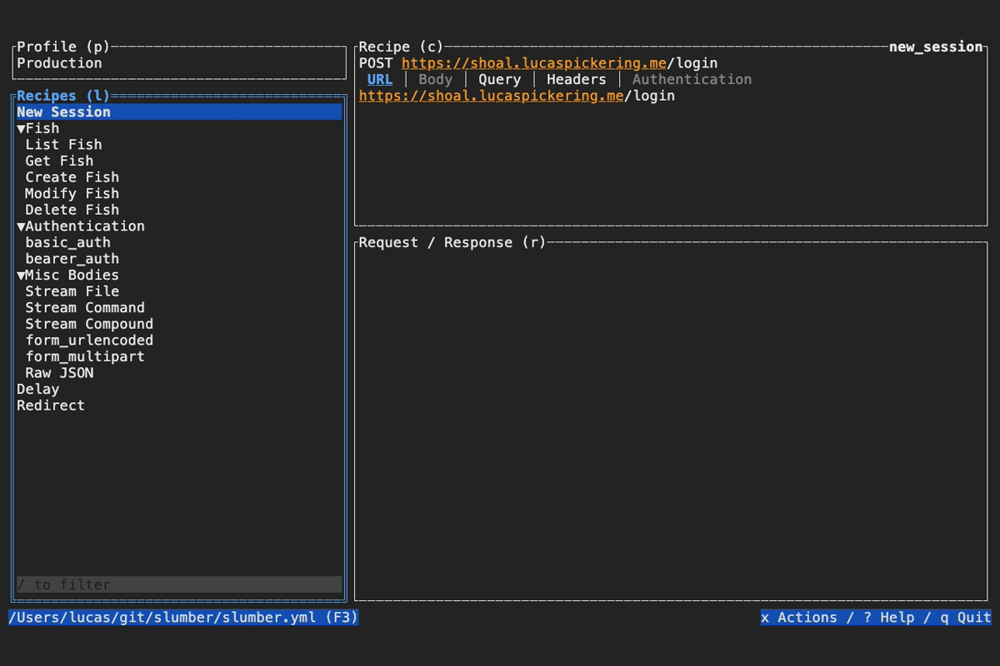
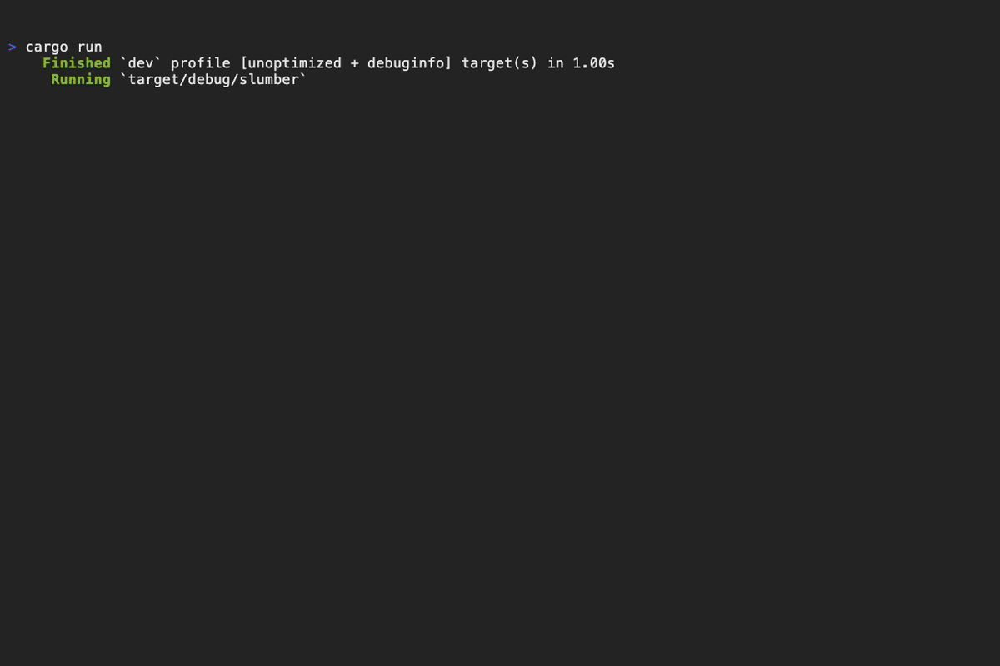
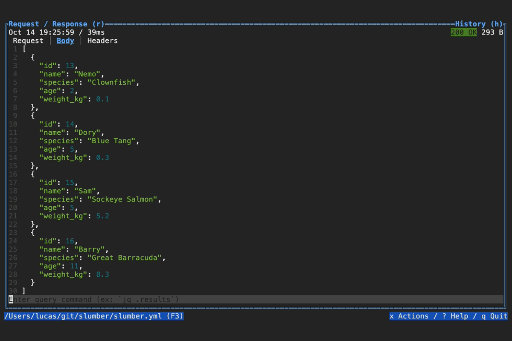

Introduction
Slumber is a terminal-based HTTP client, built for interacting with REST and other HTTP clients. It has two usage modes: Terminal User Interface (TUI) and Command Line Interface (CLI). The TUI is the most useful, and allows for interactively sending requests and viewing responses. The CLI is useful for sending quick requests and scripting.
The goal of Slumber is to be easy to use, configurable, and sharable. To that end, configuration is defined in a YAML file called the request collection. Both usage modes (TUI and CLI) share the same basic configuration, which is called the request collection.
Check out the Getting Started guide to try it out, or move onto Key Concepts to start learning in depth about Slumber.

Install
Slumber binaries are available from the GitHub Releases page. Or if you prefer a managed installation:
cargo
cargo install slumber --locked
cargo binstall
cargo binstall slumber
homebrew
brew install LucasPickering/tap/slumber
sh
curl --proto '=https' --tlsv1.2 -LsSf https://github.com/LucasPickering/slumber/releases/download/v3.3.0/slumber-installer.sh | sh
powershell
powershell -c "irm https://github.com/LucasPickering/slumber/releases/download/v3.3.0/slumber-installer.ps1 | iex"
Shell Completions
After installation, you can optionally install shell completions for TAB-complete of CLI commands. For the full list of supported shells, see the clap docs.
Note: Slumber uses clap’s native shell completions, which are still experimental. This issue outlines the remaining work to be done.
To source your completions:
Bash
echo "source <(COMPLETE=bash slumber)" >> ~/.bashrc
Elvish
echo "eval (E:COMPLETE=elvish slumber | slurp)" >> ~/.elvish/rc.elv
Fish
echo "source (COMPLETE=fish slumber | psub)" >> ~/.config/fish/config.fish
Powershell
echo "COMPLETE=powershell slumber | Invoke-Expression" >> $PROFILE
Zsh
echo "source <(COMPLETE=zsh slumber)" >> ~/.zshrc
Getting Started
Quick Start
Once you’ve installed Slumber, setup is easy.
1. Create a Slumber collection file
Slumber’s core feature is that it’s source-based. That means you write down your configuration in a file first, then run Slumber and it reads the file. This differs from other popular clients such as Postman and Insomnia, where you define your configuration in the app, and it saves it to a file for you. The goal of being source-based is to make it easy to save and share your configurations.
The easiest way to get started is to generate a new collection with the new subcommand:
slumber new
2. Run Slumber
slumber
This will start the TUI, and you’ll see the example requests available. Use tab/shift+tab (or the shortcut keys shown in the pane headers) to navigate around. Select a recipe in the left pane, then hit Enter to send a request.
Going Further
Now that you have a collection, you’ll want to customize it. Here’s another example of a simple collection, showcasing multiple profiles:
# slumber.yml
profiles:
local:
data:
host: http://localhost:5000
production:
data:
host: https://myfishes.fish
requests:
create_fish:
method: POST
url: "{{ host }}/fishes"
body:
type: json
data: { "kind": "barracuda", "name": "Jimmy" }
list_fish:
method: GET
url: "{{ host }}/fishes"
query:
big: true
This request collection uses templates and profiles, allowing you to dynamically change the target host.
To learn more about the powerful features of Slumber you can use in your collections, keep reading with Key Concepts.
Key Concepts
There are a handful of key concepts you need to understand how to effectively configure and use Slumber. You can read about each one in detail on its linked API reference page.
Request Collection
The collection is the main form of configuration. It defines a set of request recipes, which enable Slumber to make requests to your API.
Request Recipe
A recipe defines which HTTP requests Slumber can make. A recipe generally corresponds to one endpoint on an API, although you can create as many recipes per endpoint as you’d like.
Profile
A profile is a set of static template values. A collection can contain a list of profiles, allowing you to quickly switch between different sets of values. This is useful for using different deployment environments, different sets of IDs, etc.
Template
Templates are Slumber’s most powerful feature. They allow you to dynamically build URLs, query parameters, request bodies, etc. using predefined or dynamic values.
Recipes
Recipes are the core feature of Slumber; they define how to generate HTTP requests. The terms “recipe” and “request” are often used interchangeably by users, but there is a technical distinction:
- A recipe is a definition for how to generate any number of requests
- A request is a single chunk of data (URL+headers+body) to send to a server
The distinction isn’t that important; generally it’s easy to figure out what “request” means based on the context. This is exactly why Slumber uses a requests field in the collection file instead of recipes. It’s easy to guess and easy to remember.
Method & URL
A recipe’s HTTP method is defined by the method field. Unlike other recipe fields, method is not a template. It must be a static string containing one of the supported methods (case insensitive):
CONNECTDELETEGETHEADOPTIONSPATCHPOSTPUTTRACE
The recipe URL is defined by the url field:
requests:
get_fishes:
method: GET
url: "https://myfishes.fish/fishes"
Query Parameters
See the API docs for more detailed info.
Query parameters are specified via the query field. They form a component of a request URL and provide additional information to the server about a request. In a request recipe, query parameters are defined as a map of parameter: value. The value can be a singular value (string/boolean/etc.) or a list of values.
recipes:
get_fishes:
method: GET
url: "https://myfishes.fish/fishes"
query:
big: true
color: [red, blue] # This parameter has multiple values
name: "Barry"
This will generate the URL https://myfishes.fish/fishes?big=true&color=red&color=blue&name=Barry.
Headers
HTTP request headers are specified via the headers field, which is a mapping of {header: value}. The keys (header names) must be static, but values can be templated. Typically header values are UTF-8 text, but can be any arbitrary stream of bytes compliant with the HTTP spec.
profiles:
default:
data:
host: https://myfishes.fish
recipes:
get_fishes:
method: GET
url: "https://myfishes.fish/fishes"
headers:
X-Custom-Header: "You are https://myfishes.fish"
Before manually specifying headers, read the sections below on authentication and request bodies. Slumber has first-class support for common request features that may make it unnecessary to specify headers such as
Content-TypeorAuthorization.
Authentication
See the API docs for more detailed info.
Slumber supports multiple methods of request authentication, making it easier to build request with common authentication schemes. The supported types currently are:
- Basic (username/password)
- Bearer (API token)
If you’d like support for a new authentication scheme, please file an issue.
requests:
basic_auth:
method: GET
url: "https://myfishes.fish/fishes"
authentication:
type: basic
username: user
password: hunter2
bearer_auth:
method: GET
url: "https://myfishes.fish/fishes"
authentication:
type: bearer
token: my-token
Body
Bodies
See the API docs for more detailed info.
Slumber supports a number of different body types:
- Raw text/bytes
- JSON
- URL-encoded forms (
application/x-www-form-urlencoded) - Multipart forms (
multipart/form-data)
Raw Text/Bytes
Passing just a template to the body field gives you a raw string/binary body.
text_body:
method: POST
url: "https://myfishes.fish/fishes/42/name"
headers:
Content-Type: text/plain
body: Alfonso
binary_body:
method: POST
url: "https://myfishes.fish/fishes/42/image"
headers:
Content-Type: image/jpg
body: "{{ file('./fish.png') }}"
JSON
type: json allows you to pass arbitrary values to the data field. The string values are all treated as templates.
json_body:
method: POST
url: "https://myfishes.fish/fishes/42"
# Content-Type header will be set to `application/json` automatically
body:
type: json
data: { "name": "{{ name }}" }
See this example for how to use dynamic non-string values in JSON bodies. This is called “unpacking”.
URL-encoded Form
type: form_urlencoded expects a key-value mapping for the data field. Each entry is a field in the form. The values are all templates.
urlencoded_body:
method: POST
url: "https://myfishes.fish/fishes/42"
# Content-Type header will be set to `application/x-www-form-urlencoded` automatically
body:
type: form_urlencoded
data:
name: Alfonso
Multipart Form
type: form_urlencoded expects a key-value mapping for the data field. Each entry is a field in the form. The values are all templates, and can be either text or binary values.
multipart_body:
method: POST
url: "https://myfishes.fish/fishes/42"
# Content-Type header will be set to `multipart/form-data` automatically
body:
type: form_multipart
data:
name: Alfonso
image: b"\x12\x34"
Templates
Templates enable dynamic request construction. Slumber’s template language is relatively simple when compared to HTML templating languages such as Handlebars or Jinja. The goal is to be simple, intuitive, and unsurprising. Every value in a request (except for the HTTP method) is a template, meaning it can be computed dynamically.
Quick Start
Slumber templates in 60 seconds or less:
- Double curly braces
{{...}}denotes a dynamic value in a template - Literals:
- Null:
null - Booleans:
trueandfalse - Integers:
-3or1000 - Floats:
-3.14,1000.0,3.14e2 - String:
'hello'or"hello"(single or double quotes)- Escape inner quotes with
\
- Escape inner quotes with
- Bytes:
b'hello'orb"hello" - Array:
[1, "hello", [true, b"world"]] - Object:
{ 'a': 1, 'b': 2 }
- Null:
- Profile fields:
host(see Profiles) - Function calls:
g(f(), 1) - Pipes:
f() | g(1)- Result of
f()is passed as the last argument tog f() | g(1)is equivalent tog(1, f())
- Result of
Put it all together and you can build collections like this:
{{ host }}/fish/{{ response('list_fish') | jsonpath('$[0].id') }}
If you still have questions, you can keep reading or skip to some examples.
YAML Syntax
Templates are defined as strings in your request collection YAML file. For example, here’s a template for a request URL:
requests:
list_fish:
method: GET
url: "{{ host }}/fish"
Most values in a request collection (e.g. URL, request body, etc.) are templates. Even profile values are templates! Map keys (e.g. recipe ID, profile ID) are not templates; they must be static strings.
A note on YAML string syntax
One of the advantages (and disadvantages) of YAML is that it has a number of different string syntaxes. This enables you to customize your templates according to your specific needs around the behavior of whitespace and newlines. In most cases, you should just use
""on all strings. See YAML’s string syntaxes and yaml-multiline.info for more info.
Not all template are dynamic. Static strings are also valid templates and just render to themselves:
requests:
list_fish:
method: GET
# This is a valid template
url: "https://myfishes.fish/fish"
# Numbers and booleans can also be templates!
query:
number_param: 3 # Parses as the template "3"
bool_param: false # Parses as "false"
Escape Sequences
In some scenarios you may want to use the {{ sequence to represent those literal characters, rather than the start of a template key. To achieve this, you can escape the sequence with an underscore inside it, e.g. {_{. If you want the literal string {_{, then add an extra underscore: {__{.
| Template | Parses as |
|---|---|
{_{this is raw text}} | ["{{this is raw text}}"] |
{_{{field1}} | ["{", field("field1")] |
{__{{field1}} | ["{__", field("field1")] |
{_ | ["{_"] (no escaping) |
Why?
Why does Slumber have its own template language? Why not use Jinja/Handlebars/Tera/Liquid/etc?
- Rust integration. Not all template languages have a Rust interface that enables the flexibility that Slumber needs.
- Support for lazy expressions. Some languages require all available values in template to be precomputed, which is incompatible with Slumber’s dynamic data sources.
- Binary values. Most template languages focus on generating strings and don’t support binary output values. Binary values are necessary for Slumber because not all HTTP requests are strings. For example, loading an image from a file and uploading it to a server involves non-textual template values.
- Simplicity. Most template languages are written for the purpose of building websites, which means generating HTML. This involves complex features such as conditionals and for loops. Slumber’s needs are much more narrow. By simplifying the template language, it reduces the level of complexity available to users. This is a tradeoff: an easier learning curve, at the cost of less power.
Values
Templates contain expressions, and expressions evaluate to values. Template values are basically JSON values, with the addition of one more type: bytes. Here’s the full list:
nullboolean:trueorfalsefloat- Uses f64 internally. See docs for information on min/max values.
integer(signed integer)- Uses i64 internally. See docs for information on min/max values.
string:"hello!"or'hello!'- Single-quote format is more common because your templates will often be wrapped in
"to denote a YAML string
- Single-quote format is more common because your templates will often be wrapped in
bytes:b"hello!"orb'hello!'array:[1, false, 'hello!']object:{ 'a': 1, 'b': 2 }- Object keys must be strings. If a non-string value is given, it will be stringified
bytes vs string
A string is technically a subset of bytes: any sequence of valid UTF-8 bytes can be a string. Many functions return a bytes value because Slumber doesn’t know if the value is valid UTF-8 or not. You may wonder: what do I do with this? How do I turn it into a string? You don’t have to! There are three scenarios in which bytes can be used:
- You have a
bytesbut need astring. The bytes are valid UTF-8. Slumber will automatically convert it to astringwhen necessary. - You have a
bytesbut need astring. The bytes are not valid UTF-8. Slumber will attempt to convert it to astringand fail, returning an error during request render. - You have a
bytesand need abytes(e.g. for a request body, which doesn’t need to be valid UTF-8). Easy!
So the short answer is: if you see a function return bytes, you can generally pretend it says string. The types are distinct to acknowledge the fact that the bytes may not be valid UTF-8, and therefore may trigger errors while rendering a request.
Functions
Template functions enable you to build dynamic templates in a way that’s intuitive and composable. Slumber templates behave as a simple functional language: functions take arguments and evaluate to values. All functions are provided by Slumber; there is no way to define your own functions.
For the list of available functions, see Template Functions.
Arguments
Slumber functions take two types of arguments:
- Positional arguments are specified in a specific and are always required
- Keyword arguments as passed in the form
key=value, can be specified in any order (provided all positional arguments are passed first), and are always optional
In the function signatures listed below, keyword arguments are specified with a ? while positional arguments are not.
For example, this function takes 2 required positional arguments and 2 optional keyword arguments:
func(a: string, b: boolean, c?: string, d?: bytes): string
Given this function signature, the following are all valid calls:
func("hello", true);
func("hello", true, "world");
func("hello", true, c="world");
func("hello", true, d=b"bytes");
func("hello", true, c="world", d=b"bytes");
func("hello", true, d=b"bytes", c="world"); # Keyword args can be reordered
The follow calls are not valid:
# WARNING: Invalid code!!
func("hello") # Required arguments omitted
func(c="world", "hello", true) # Keyword argument before positional
func("hello", true, c="world", c="world") # Keyword argument given twice
func("hello", true, "world") # Optional arguments must be given by name
Defaults
If a keyword argument is omitted, it will be replaced by a default value. In most cases, the default will be based on the type of the argument:
boolean:falsefloat:0.0integer:0string:""bytes:b""array:[]value:null
If the default varies from this list, it will be specified in the Parameters section of the function’s docs.
Pipe Operator
It’s common to take the output of one function and pass it to another. This is especially useful for filter-esque functions like jsonpath and trim that modify incoming input. Here’s an example using command and trim
# Command output often includes a trailing newline that we want to trim away
trim(command(["echo", "hello"]))
This works, but it’s a bit backward: we run the command, then trim it. To make these types of composed operations easier to read and write, Slumber supports the pipe operator |. The left-hand side of the operator can be any expression, but is typically a function call. The right-hand side must be a function call. The left-hand side is evaluated, then the result is passed as the last argument to the right-hand side. We can rewrite the same expression from above with the pipe:
# Equivalent to the above expression
command(["echo", "hello"]) | trim()
This is equivalent, but easier to read because the lexical ordering of calls matches the evaluation order.
Unlike other template languages such as Jinja and Tera, the right-hand side of a pipe must include parentheses, even if they argument list is empty. Additionally, other languages have a distinction between “functions” and “filters”, and only filters can be used on the right-hand side of a pipe operation. This distinction does not exist in Slumber; any function can be used on the right-hand side of a pipe, as long as it takes at least one positional argument.
Remember: the piped value is passed as the last positional argument to the right-hand side. That means it will be inserted after other positional arguments but before any keyword arguments. Here’s another example, using response and jsonpath.
response('login') | jsonpath("$.token", mode="single")
# is equivalent to
jsonpath("$.token", response('login'), mode="single")
Examples
Profiles
Let’s start with a simple example. Let’s say you’re working on a fish-themed website, and you want to make requests both to your local stack and the deployed site. Templates, combined with profiles, allow you to easily switch between hosts:
For the purposes of these examples, I’ve made up some theoretical endpoints and responses, following standard REST practice. This isn’t a real API but it should get the point across.
Additionally, these examples will use the CLI because it’s easy to demonstrate in text. All these concepts apply equally to the TUI.
profiles:
local:
data:
host: http://localhost:5000
production:
data:
host: https://myfishes.fish
requests:
list_fish:
method: GET
url: "{{ host }}/fishes"
query:
big: true
Now you can easily select which host to hit. In the TUI, this is done via the Profile list. In the CLI, use the --profile option:
> slumber request --profile local list_fish
# http://localhost:5000/fishes
# Only one fish :(
[{"id": 1, "kind": "tuna", "name": "Bart"}]
> slumber request --profile production list_fish
# https://myfishes.fish/fishes
# More fish!
[
{"id": 1, "kind": "marlin", "name": "Kim"},
{"id": 2, "kind": "salmon", "name": "Francis"}
]
Chaining requests
One of Slumber’s most powerful tools is the ability to chain requests together: send request 1, get some data from its response, then include that in request 2. Here’s a series of examples showing how you can accomplish this.
Load data from response
If you want to send a request that includes data derived from a previous response, you can use the response function.
requests:
list_fish:
method: GET
url: "{{ host }}/fishes"
post_fish_list:
method: POST
url: "{{ host }}/fishes"
body: "{{ response('list_fish') }}"
response on its own is not very useful. Typically you want to extract some data from the response to include in your request. See the next example for this.
Data extraction via JSONPath
JSONPath is a simple query language for extracting data from JSON documents. Slumber has a jsonpath function for this purpose.
In this example, we extract the first fish from list_fish to get additional details about it:
requests:
list_fish:
method: GET
url: "{{ host }}/fishes"
get_fish:
method: GET
url: "{{ host }}/fishes/{{ response('fish_list') | jsonpath('$[0].id') }}"
The JSONPath query here is $[0].id, meaning it selects the id property from the first fish in the response.
Dynamic select lists with select
Fetching the first fish is neat and all, but what if you want to select which fish to fetch? Enter the select function! You can combine select with jsonpath to build dynamic selection lists:
requests:
list_fish:
method: GET
url: "{{ host }}/fishes"
get_fish:
method: GET
url: "{{ host }}/fishes/{{ response('fish_list') | jsonpath('$[*].id', mode='array') | select() }}"
Notice that in this example, the JSONPath has changed from $[0].id to $[*].id, so it selects the id property from every fish in the response, creating a list of IDs. Piping that to select will pop up a dialog with all the available fish IDs.
Also note the mode='array' argument to jsonpath. This tells jsonpath to always return an array of values, even if there is only one available. This is necessary because select must take in an array. See the mode argument of jsonpath for more info.
Triggering upstream requests
These examples are all neat and fancy, but they rely on you manually running list_fish. If you want your list of available fish you update, you’ll have to kick it off manually. But we can do better! response takes an additional argument called trigger, enabling Slumber to automatically trigger the upstream request (in this case, list_fish) under certain conditions. The options for trigger are:
"never": The default behavior"no_history": Trigger only iflist_fishhas never been run before"always": Triggerlist_fishevery time we sendget_fish- Duration: Trigger
list_fishif the last response is older than a specific time span
The first 3 options are pretty straight forward, so let’s dig in the Duration option. Let’s say we don’t think fish will be added or removed that often, so only trigger list_fish if it’s more than a day old.
requests:
list_fish:
method: GET
url: "{{ host }}/fishes"
get_fish:
method: GET
url: "{{ host }}/fishes/{{ response('fish_list', trigger='1d') | jsonpath('$[*].id', mode='array') | select() }}"
That’s it! Just add trigger='1d' and Slumber handles the rest. See the docs for response for more info on the trigger duration format.
Deduplicating template expressions
As the previous examples have shown, template expressions can get pretty complicated. Slumber’s template language doesn’t support variables or assignment, so how can we break a template up into simpler pieces? This is especially useful when you want to use the same complicated template in multiple places. We can achieve this through dynamic profile values:
profiles:
local:
host: http://localhost:5000
fish_id: "{{ response('fish_list', trigger='1d') | jsonpath('$[*].id', mode='array') | select() }}"
requests:
list_fish:
method: GET
url: "{{ host }}/fishes"
get_fish:
method: GET
url: "{{ host }}/fishes/{{ fish_id }}"
delete_fish:
method: DELETE
url: "{{ host }}/fishes/{{ fish_id }}"
Now we can easily use that template in multiple recipes. But, what if we have multiple profiles? We wouldn’t want to copy-paste that template across every profile. Using composition, we can define the template in one place and share it in every profile:
.base_profile_data:
fish_id: "{{ response('fish_list', trigger='1d') | jsonpath('$[*].id', mode='array') | select() }}"
profiles:
local:
$ref: "#/.base_profile_data"
host: http://localhost:5000
production:
$ref: "#/.base_profile_data"
host: https://myfishes.fish
requests:
list_fish:
method: GET
url: "{{ host }}/fishes"
get_fish:
method: GET
url: "{{ host }}/fishes/{{ fish_id }}"
delete_fish:
method: DELETE
url: "{{ host }}/fishes/{{ fish_id }}"
Non-string JSON templates
JSON bodies support dynamic non-string values. By using a template with a single dynamic chunk (i.e. a single {{ ... }}), you can create non-string values. Let’s say we have a JSON file ./friends.json with this content:
["Barry", "Dora"]
We can use this file in a request body:
requests:
json_body:
method: POST
url: "https://myfishes.fish/fishes/{{ fish_id }}"
body:
type: json
data:
{
"name": "Alfonso",
"friends": "{{ file('./friends.json') | json_parse() }}",
}
The request body will render as:
{
"name": "Alfonso",
"friends": ["Barry", "Dora"]
}
A few things to notice here:
- We had to explicitly parse the contents of the file with
json_parse(). By default the content loaded is just arbitrary bytes; Slumber doesn’t know it’s supposed to be JSON. - The parsed JSON is included directly into the JSON body, without the surrounding quotes from the template. In other words, the value was unpacked.
In some cases this behavior may not be desired, e.g. when combined with jsonpath(). You can pipe to string() to disable this behavior:
requests:
json_body:
method: POST
url: "https://myfishes.fish/fishes/{{ fish_id }}"
body:
type: json
data:
{
"name": "Alfonso",
"friends": "{{ file('./friends.json') | jsonpath('$[*]') | string() }}",
}
This will render to:
{
"name": "Alfonso",
"friends": "[\"Barry\", \"Dora\"]"
}
Profiles
A profile is a set of values accessible to templates that you can easily switch between. In the TUI, this is via the Profiles modal (hotkey p by default). In the CLI, use the --profile (or -p) flag.
The canonical use case for profiles is to switch between different API hosts. Here’s what that looks like:
profiles:
local:
data:
host: http://localhost:5000
production:
data:
host: https://myfishes.fish
requests:
list_fish:
method: GET
url: "{{ host }}/fishes"
But profiles aren’t restricted to setting the API host. The data field can hold whatever fields you want. Here’s an example of setting your API user via profiles:
profiles:
user1:
data:
username: user1
user2:
data:
username: user2
requests:
list_fish:
method: GET
url: "https://myfishes.fish/fishes"
authentication:
type: basic
username: "{{ username }}"
password: "{{ file('./password.txt') }}"
Dynamic profile values
Fun fact: profile values are templates! This means you can put dynamic values in your profiles and they’ll be rendered automatically with no extra effort. For example, if you want a profile for each user that you may log in as, plus an additional profile that lets you prompt for a username:
profiles:
user1:
data:
username: user1
user2:
data:
username: user2
user_prompt:
data:
username: "{{ prompt(message='Username') }}"
requests:
list_fish:
method: GET
url: "https://myfishes.fish/fishes"
authentication:
type: basic
username: "{{ username }}"
password: "{{ file('./password.txt') }}"
When you send the list_fish command with the user_prompt profile selected, it will prompt you to enter a username, then user that value for {{ username }}.
This feature can also be used to deduplicate common template expressions.
Template caching
In the example above, we saw how a profile field can contain a dynamic template. These dynamic profile fields are automatically cached within the scope of a single request. This means if you use the same field multiple times in a request, the template will only be rendered once. Here’s an extension of the above example:
profiles:
user1:
data:
username: user1
user2:
data:
username: user2
user_prompt:
data:
username: "{{ prompt(message='Username') }}"
requests:
list_fish:
method: GET
url: "https://myfishes.fish/fishes"
authentication:
type: basic
username: "{{ username }}"
password: "{{ file('./password.txt') }}"
query:
username: "{{ username }}"
In this example, two different fields in the request (authentication.username and query.username) both reference the username profile field. But the corresponding template {{ prompt(message='Username') }} is only rendered once. That means you’ll only be prompted once for a username, and entered value will be used for both instances of {{ username }}.
This caching applies only when a single profile field is referenced multiple times within a single request. If you send the same request a second time, you will be prompted again for a username.
Collection Reuse with $ref
Slumber supports a $ref anywhere in any YAML file that allows referencing any other part of a YAML document (including other files). It uses the JSON Reference and JSON Pointer notation used by OpenAPI.
The format of the $ref is a URI with an optional base/path. The base can be:
- Empty, indicating a reference within the same file
- A file path, indicating a reference to another file
- Path is always relative to the importing file
requests:
list_fish:
method: GET
url: "{{ host }}/fishes"
get_fish:
method:
$ref: "#/requests/list_fish/method"
url: "{{ host }}/fishes/{{ fish_id }}"
The reference source is everything before the #; the pointer is everything after.
The Problem
Let’s start with an example of something that sucks. Let’s say you’re making requests to a fish-themed JSON API, and it requires authentication. Gotta protect your fish! Your request collection might look like so:
profiles:
local:
data:
host: http://localhost:3000
fish_id: 6
production:
data:
host: https://myfishes.fish
fish_id: 6
requests:
list_fish:
method: GET
url: "{{ host }}/fishes"
query:
big: true
headers:
Accept: application/json
authentication:
type: bearer
token: "{{ file('./api_token.txt') | trim() }}"
get_fish:
method: GET
url: "{{ host }}/fishes/{{ fish_id }}"
headers:
Accept: application/json
authentication:
type: bearer
token: "{{ file('./api_token.txt') | trim() }}"
The Solution
You’ve heard of DRY, so you know this is bad. Every profile has to include the fish ID, and every new request recipe has to copy-paste the authentication and headers.
You can easily reuse components of your collection using $ref:
# The name here is arbitrary, pick any name you like. Make sure it starts with
# . to avoid errors about an unknown field
.base_profile_data:
fish_id: 6
.base_request:
headers:
Accept: application/json
authentication:
type: bearer
token: "{{ file('./api_token.txt') | trim() }}"
profiles:
local:
data:
$ref: "#/.base_profile_data"
host: http://localhost:3000
production:
data:
$ref: "#/.base_profile_data"
host: https://myfishes.fish
requests:
list_fish:
$ref: "#/.base_request"
method: GET
url: "{{ host }}/fishes"
query:
big: true
get_fish:
$ref: "#/.base_request"
method: GET
url: "{{ host }}/fishes/{{ fish_id }}"
Great! That’s so much cleaner. Now each recipe can inherit whatever base properties you want just by including $ref: "#/.base_request". This is still a bit repetitive, but it has the advantage of being explicit. You may have some requests that don’t want to include those values.
Recursive Composition
But wait! What if you have a new request that needs an additional header? Unfortunately, $ref does not support recursive merging. If you need to extend the headers map from the base request, you’ll need to pull the parent headers in manually:
.base_request:
headers:
Accept: application/json
authentication:
type: bearer
token: "{{ file('./api_token.txt') | trim() }}"
requests:
create_fish:
$ref: "#/.base_request"
method: GET
url: "{{ host }}/fishes/{{ fish_id }}"
headers:
$ref: "#/.base_request/headers"
Host: myfishes.fish
body:
type: json
data: { "kind": "barracuda", "name": "Barry" }
Cross-File Composition
Reusing components within a single file is great and all, but $ref also supports importing components from other files:
base.yml
requests:
login:
method: POST
url: "{{ host }}/login"
body:
type: json
data:
{
"username": "{{ prompt(message='Username') }}",
"password": "{{ prompt(message='Password', sensitive=true) }}",
}
slumber.yml
requests:
login:
$ref: "./base.yml#/requests/login"
Referenced files do not need to be valid Slumber collections; any valid YAML file can be referenced
Replacement vs Extension
Depending on how $ref is used, the referenced value will either replace or extend the reference.
- If
$refis the only field in its mapping, the entire mapping will be replaced - If there are other fields in
$ref, just the$reffield will be replaced by the fields in the referenced mapping- In this case, the referenced value must be a mapping; any other value type will trigger an error
refs:
string: "hello!"
mapping:
a: 1
b: 2
# `string`'s mapping value is replaced by the referenced string
# string: "hello!"
string:
$ref: "#/refs/string"
# `mapping`'s mapping value is replaced by another mapping. This is functionally
# equivalent to extending `mapping` with `refs/mapping`.
#
# mapping:
# a: 1
# b: 2
mapping:
$ref: "#/refs/mapping"
# The values of `refs/mapping` are replaced exactly where $ref is. `mapping/a`
# is overridden by `refs/mapping/a`, but `mapping/b` overrides `refs/mapping/b`
#
# mapping_extend:
# a: 1
# b: 3
mapping_extend:
a: 0
$ref: "#/refs/mapping"
b: 3
# Error! Can't extend a mapping with a string
mapping_error:
$ref: "#/refs/string"
b: 3
Data Streaming & File Upload
If you want to generate HTTP requests with very large bodies, you may want to use streams to upload
In addition to reducing memory usage and saving the TUI from having to load and display a giant body, streaming also enables some additional features for multipart form bodies.
What is Streaming?
Streaming is when the HTTP client sends bytes directly from a source such as a file to the HTTP server without loading the entire body into memory. It’s useful when the body is very large because it saves time and memory.
Streaming in Slumber
Slumber supports streaming in these contexts:
streamrequest bodyform_multipartrequest body fields
and from these functions:
# These bodies **WILL** be streamed
file:
method: POST
url: "{{ host }}/upload"
body:
type: stream
data: "{{ file('image.png') }}"
command:
method: POST
url: "{{ host }}/upload"
body:
type: stream
data: "here's some bytes: {{ command(['head', '-c', '1000', '/dev/random']) }}"
multipart:
method: POST
url: "{{ host }}/upload"
body:
type: form_multipart
data:
image: "{{ file('./image.png') }}"
# These bodies will **NOT** be streamed
file:
method: POST
url: "{{ host }}/upload"
# The template contains multiple chunks, so it can't be streamed
body: "{{ file('image.png') }}"
Multipart File Streaming
In addition to support for general streaming of bytes, form_multipart fields also have special support for file uploads. If the value of a field is a template with a single chunk, and the final call of the chunk is to file(), then the fille will be uploaded directly. This has two effects on that part of the form:
- The
Content-Typeheader will be set based on the file extension - The
Content-Dispositionheader will have thefilenamefield set
Here’s an example:
multipart_file:
method: POST
url: "{{ host }}/upload"
body:
type: form_multipart
data:
image: "{{ file('./data/data.json') }}"
This will generate a request body like:
--BOUNDARY
Content-Disposition: form-data; name="file"; filename="data.json"
Content-Type: application/json
{ "a": 1, "b": 2 }
--BOUNDARY--
But if you generate the same body with an equivalent command() call, the body will still be streamed, however the headers will not be set based on the file path.
multipart_command:
method: POST
url: "{{ host }}/upload"
body:
type: form_multipart
data:
image: "{{ command(['cat', './data/data.json']) }}"
This will generate a request body like:
--BOUNDARY
Content-Disposition: form-data; name="file"
{ "a": 1, "b": 2 }
--BOUNDARY--
Importing External Collections
You can import external collection formats such as OpenAPI into Slumber collections. See the slumber import subcommand for more.
Terminal User Interface
The Terminal User Interface (TUI) is the primary use case for Slumber. It provides a long-lived, interactive interface for sending HTTP requests, akin to Insomnia or Postman. The difference of course is Slumber runs entirely in the terminal.
To start the TUI, simply run:
slumber
This will detect your request collection file according to the protocol. If you want to load a different file, you can use the --file parameter:
slumber --file my-slumber.yml
Auto-Reload
Once you start your Slumber, that session is tied to a single collection file. Whenever that file is modified, Slumber will automatically reload it and changes will immediately be reflected in the TUI. If auto-reload isn’t working for some reason, you can manually reload the file with the r key.
Multiple Sessions
Slumber supports running multiple sessions at once, even on the same collection. Request history is stored in a thread-safe SQLite, so multiple sessions can safely interact simultaneously.
If you frequently run multiple sessions together and want to quickly switch between them, consider a configurable terminal manager like tmux or Zellij.
In-App Editing & File Viewing
Editing

Slumber supports editing your collection file without leaving the app. To do so, open the actions menu (x by default), then select Edit Recipe. Slumber will open an external editor to modify the selected recipe. To determine which editor to use, Slumber checks these places in the following order:
editorfield of the configuration fileVISUALenvironment variableEDITORenvironment variable- Default to
vim
The VISUAL and EDITOR environment variables are a common standard to define a user’s preferred text editor. For example, it’s what git uses by default to determine how to edit commit messages. If you want to use the same editor for all programs, you should set these. If you want to use a command specific to Slumber, set the editor config field.
Slumber supports passing additional arguments to the editor. For example, if you want to open VSCode and have wait for the file to be saved, you can configure your editor like so:
editor: code --wait
The command will be parsed like a shell command (although a shell is never actually invoked). For exact details on parsing behavior, see shell-words.
In order to open the editor to a particular line+column, Slumber uses the editor-command crate. Most editors support the format file:line:column. A few popular editors that don’t support that format (vim, emacs, and nano) have custom behavior instead. See the open_at method for more details.
Paging
You can open request and response bodies in a separate file browser if you want additional features beyond what Slumber provides. To configure the command to use, set the PAGER environment variable or the pager configuration field:
pager: bat
Slumber will check these places in the following order for a command:
pagerfield of the configuration filePAGERenvironment variable- Default to
less(Unix) ormore(Windows)
The pager command uses the same format as the
editorfield. The command is parsed with shell-words, then a temporary file path is passed as the final argument.
To open a body in the pager, use the actions menu keybinding (x by default, see input bindings), and select View Body.
Some popular pagers:
Setting a content-specific pager
If you want to use a different pager for certain content types, such as using jless for JSON, you can pass a map of MIME type patterns to commands. For example:
pager:
json: jless
default: less
For more details on matching, see MIME Maps.
Data Filtering & Querying
When browsing an HTTP response in Slumber, you may want to filter, query, or otherwise transform the response to make it easier to view. Slumber supports this via embedded shell commands. The query box at the bottom of the response pane allows you to execute any shell command, which will be passed the response body via stdin and its output will be shown in the response pane. You can use grep, jq, sed, or any other text processing tool.
Example of querying with jq

Example of using pipes in a query command

You can search query history with ctrl r
Exporting data
Keep in mind that your queries are being executed as shell commands on your system. You should avoid running any commands that interact with the file system, such as using > or < to pipe to/from files. However, if you want to export response data from Slumber, you can do so with the export command palette. To open the export palette, select the Response pane and press the export key binding (: by default). Then enter any shell command, which will receive the response body as stdin.
Note: For text bodies, whatever text is visible in the response pane is what will be passed to stdin. So if you have a query applied, the queried body will be exported. For binary bodies, the original bytes will be exported.
Some useful commands for exporting data:
tee > response.json- Save the response toresponse.jsonteetakes data from stdin and sends it to zero or more files as well as stdout. Another way to write this would betee response.json
pbcopy- Copy the body to the clipboard (MacOS only - search online to find the correct command for your platform)
Remember: This is a real shell, so you can pipe through whatever transformation commands you want here!
Default command
You can set the default command to query with via the commands.default_query config field. This accepts either a single string to set it for all content types, or a MIME map to set different defaults based on the response content type. For example, to default to jq for all JSON responses:
commands:
default_query:
json: jq
Which shell does Slumber use?
By default, Slumber executes your command via sh -c on Unix and cmd /S /C on Windows. You can customize this via the commands.shell configuration field. For example, to use fish instead of sh:
commands:
shell: [fish, -c]
If you don’t want to execute via any shell, you can set it to []. In this case, query commands will be parsed via shell-words and executed directly. For example, jq .args will be parsed into ["jq", ".args"], then jq will be executed with a single argument: .args. This of course means you won’t get access to shell features such as |, but it provides better cross-platform portability.
Command Line Interface
While Slumber is primary intended as a TUI, it also provides a Command Line Interface (CLI). The CLI can be used to send requests, just like the TUI. It also provides some utility commands for functionality not available in the TUI. For a full list of available commands see the side bar or run:
slumber help
Some common CLI use cases:
- Send requests
- Import from an external format
- Generate request in an external format (e.g. curl)
- View & edit Slumber configuration
Examples
The Slumber CLI can be composed with other CLI tools, making it a powerful tool for scripting and bulk tasks. Here are some examples of how to use it with common tools.
Note: These examples are written for a POSIX shell (bash, zsh, etc.). It assumes some basic familiarity with shell features such as pipes. Unfortunately I have no shell experience with Windows so I can’t help you there :(
Filtering responses with jq
Let’s say you want to fetch the name of each fish from your fish-tracking service. Here’s your collection file:
requests:
list_fish:
method: GET
url: "https://myfishes.fish/fishes"
This endpoint returns a response like:
[
{
"kind": "barracuda",
"name": "Jimmy"
},
{
"kind": "striped bass",
"name": "Balthazar"
},
{
"kind": "rockfish",
"name": "Maureen"
}
]
You can fetch this response and filter it down to just the names:
slumber rq list_fish | jq -r '.[].name'
And the output:
Jimmy
Balthazar
Maureen
Running requests in parallel with xargs
Building on the previous example, let’s say you want to fetch details on each fish returned from the list response. We’ll add a get_fish recipe to the collection. By default, the fish name will come from a prompt:
profiles:
prd:
fish_name: "{{ prompt(message='Which fish?') }}"
requests:
list_fish:
method: GET
url: "https://myfishes.fish/fishes"
get_fish:
method: GET
url: "https://myfishes.fish/fishes/{{ fish_name }}"
We can use xargs and the -o flag of slumber request to fetch details for each fish in parallel:
slumber rq list_fish | jq -r '.[].name' > fish.txt
cat fish.txt | xargs -L1 -I'{}' -P3 slumber rq get_fish --override fish_name={} --output {}.json
Let’s break this down:
-L1means to consume one argument (in this case, one fish name) per invocation ofslumber-I{}sets the substitution string, i.e. the string that will be replaced with each argument-P3tellsxargsthe maximum number of processes to run concurrently, which in this case means the maximum number of concurrent requests- Everything else is the
slumbercommand--override fish_name={}:xargsreplacesfish_namewith the argument from the file, so it doesn’t prompt for a name--output {}.jsonwrites to a JSON file with the fish’s name (e.g.Jimmy.json)
Subcommands
slumber collection
Show the request collection file. You can open the file in your configured editor with slumber collection --edit.
slumber config
Show the global configuration file. You can open the file in your configured editor with slumber config --edit.
slumber db
Access and modify the local Slumber database. This has an optional subcommand that provides direct access to the collection or request history. Without the subcommand, it just opens a shell into the SQLite file. By default this executes sqlite3 and thus requires sqlite3 to be installed.
Open a shell to the database:
slumber db
Run a single query and exit:
slumber db 'select 1'
slumber db collection
View and manipulate stored collection history/state. Slumber uses a local database to store all request/response history, as well as UI state and other persisted values. As a user, you rarely have to worry about this. The most common scenario in which you do have to is if you’ve renamed a collection file and want to migrate the history to match the new path. See here for how to migrate collection files.
See slumber db collection --help for more options.
slumber db request
View and modify your Slumber request history. Slumber stores every request sent from the TUI in a local SQLite database (requests are never stored in a remote server). You can find the database file with slumber db --path.
slumber db request list
List requests in a table.
slumber db request list # List all requests for the current collection
slumber db request list --all # List all requests for all collections
slumber db request list login # List all requests for the "login" recipe
slumber db request list login -p dev # List all requests for "login" under the "dev" profile
slumber db request get
Show a single request/response from history.
slumber db request get login # Get the most recent request/response for "login"
slumber db request get 548ba3e7-3b96-4695-9856-236626ea0495 # Get a particular request/response by ID (IDs can be retrieved from the `list` subcommand)
slumber db request delete
Delete requests from history by ID.
slumber db request delete 548ba3e7-3b96-4695-9856-236626ea0495
# Delete multiple requests
slumber db request list login --id-only | xargs slumber db request delete
slumber generate
Generate an HTTP request in an external format. Currently the only supported format is cURL.
Overrides
The generate subcommand supports overriding template values in the same that slumber request does. See the request subcommand docs for more.
See slumber generate --help for more options.
Examples
Given this request collection:
profiles:
production:
data:
host: https://myfishes.fish
requests:
list_fish:
method: GET
url: "{{ host }}/fishes"
query:
big: true
slumber generate curl --profile production list_fishes
slumber generate curl --profile production list_fishes -o host=http://localhost:8000
slumber import
Generate a Slumber collection file based on an external format.
See slumber import --help for more options.
Disclaimer
Importers are approximate. They’ll give the you skeleton of a collection file, but don’t expect 100% equivalency. They save a lot of tedious work for you, but you’ll generally still need to do some manual work on the collection file to get what you want.
Formats
Supported formats:
- Insomnia
- OpenAPI v3.0 and OpenAPI v3.1
- VSCode
.rest - JetBrains
.http
Examples
The general format is:
slumber import <format> <input> [output]
Possible inputs are:
-for stdin- Path to a local file
- URL to download via HTTP
For example, to import from an Insomnia collection insomnia.json:
slumber import insomnia insomnia.json slumber.yml
# Or, to read from stdin and print to stdout
slumber import insomnia - < insomnia.json
Or to import an OpenAPI spec from a server:
slumber import openapi https://petstore3.swagger.io/api/v3/openapi.json slumber.yml
Requested formats:
If you’d like another format supported, please open an issue.
slumber new
Generate a new Slumber collection file. The new collection will have some example data predefined.
Examples
# Generate and use a new collection at the default path of slumber.yml
slumber new
slumber
# Generate and use a new collection at a custom path
slumber new my-collection.yml
slumber -f my-collection.yml
slumber request
Send an HTTP request. There are many use cases to which the CLI is better suited than the TUI for sending requests, including:
- Sending a single one-off request
- Sending many requests in parallel
- Automating requests in a script
- Sharing requests with others
See slumber request --help for more options.
Overrides
You can manually override profile values using CLI arguments. This means the template renderer will use the override value in place of rendering the profile field. For example:
slumber request list_fishes --override host=https://dev.myfishes.fish
Exit Code
By default, the CLI returns exit code 1 if there is a fatal error, e.g. the request failed to build or a network error occurred. If an HTTP response was received and parsed, the process will exit with code 0, regardless of HTTP status.
If you want to set the exit code based on the HTTP response status, use the flag --exit-code.
| Code | Reason |
|---|---|
| 0 | HTTP response received |
| 1 | Fatal error |
| 2 | HTTP response had status >=400 (with --exit-code) |
Examples
Given this request collection:
profiles:
production:
data:
host: https://myfishes.fish
requests:
list_fish:
method: GET
url: "{{ host }}/fishes"
query:
big: true
slumber request --profile production list_fishes
slumber rq -p production list_fishes # rq is a shorter alias
slumber -f fishes.yml -p production list_fishes # Different collection file
Database & Persistence
Note: This is an advanced feature. The vast majority of users can use Slumber all they want without even knowing the database exists.
Slumber uses a SQLite database to persist requests and responses. The database also stores UI state that needs to be persisted between sessions. This database exists exclusively on your device. The Slumber database is never uploaded to the cloud or shared in any way. Slumber does not make any network connections beyond the ones you define and execute yourself. You own your data; I don’t want it.
Data for all your Slumber collections are stored in a single file. To find this file, run slumber db --path. You can also open it in the sqlite3 REPL with slumber db. I encourage you to browse this file if you’re curious; it’s pretty simple and there’s nothing secret in it. Keep in mind though that the database format is NOT considered part of Slumber’s API contract. It may change at any time, including the database path moving or tables be changed or removed, even in a minor or patch release.
Controlling Persistence
By default, all requests made in the TUI are stored in the database. This enables the history browser, allowing you to browse past requests. While generally useful, this may not be desired in all cases. However, there are some cases where you may not want requests persisted:
- The request or response may contain sensitive data
- The response is very large and impacts app performance
You can disable persistence for a single recipe by setting persist: false for that recipe. You can disable history globally by setting persist: false in the global config file. Note that this only disables request persistence. UI state, such as selection state for panes and checkboxes, is still written to the database.
NOTE: Disabling persistence does not delete existing request history. See here for how to do that.
Slumber will generally continue to work just fine with request persistence disabled. Requests and responses are still cached in memory, they just aren’t written to the database anymore and therefore can’t be recovered after the current session is closed. If you disable persistence, you will notice a few impacts on functionality:
- The history modal will only show requests made during the current session
- Chained requests can only access responses from the current session. Consider adding
trigger="no_history"to theresponsecall to automatically refetch it on new sessions.
Unlike the TUI, requests made from the CLI are not persisted by default. This is because the CLI is often used for scripting and bulk requests. Persisting these requests could have major performance impacts for little to no practical gain. Pass the --persist flag to slumber request to persist a CLI request.
Deleting Request History
There are a few ways to delete requests from history:
- In the TUI. Open the actions menu while a request/response is selected to delete that request. From the recipe list/recipe pane, you can delete all requests for that recipe.
slumber dbhas a few different subcommands for deleting history:slumber db request deletecan delete one at a time. Combine withslumber db request listfor bulk deletes:slumber db request list login --id-only | xargs slumber db request deleteslumber db collection deletecan delete all history for a single collection. If you have an old collection that you no longer use, you can delete it from the list using this command. Note: If you moved a collection file and want to remove the old file’s history, you can also migrate the history to the new file location.
- Manually modifying the database. You can access the DB with
slumber db. While this is not an officially supported technique (as the DB schema may change without warning), it’s simple enough to navigate if you want to performance bulk deletes with custom criteria.
Migrating Collections
As all Slumber collections’ histories are stored in the same SQLite database, each collection gets a unique UUID generated when it is first accessed. This UUID is used to persist request history and other data related to the collection. This UUID is bound to the collection’s path. If you move a collection file, a new UUID will be generated and it will be unlinked from its previous history. If you want to retain that history, you can migrate data from the old ID to the new one like so:
slumber db collection migrate slumber-old.yml slumber-new.yml
If you don’t remember the path of the old file, you can get its ID and pass that instead:
slumber db collection list
slumber db collection migrate <old ID> <new ID>
JSON Schema: Completion & Validation
Slumber generates a publishes a JSON Schema for both the Config and Collection formats. These are published via the git repository and are accessible at:
Replace
5.1.1with the version of Slumber you use for the most accurate schema definitions.
IDE Completion
Most IDEs use yaml-language-server for YAML highlighting and validation. This server supports additional validation with custom JSON schemas. To enable this, add this comment to the top of your config or collection file:
# yaml-language-server: $schema=<url from above>
Request Collection
The request collection is the primary configuration for Slumber. It defines which requests can be made, and how to make them. When running a slumber instance, a single collection file is loaded. If you want to work with multiple collections at once, you’ll have to run multiple instances of Slumber.
Collection files are designed to be sharable, meaning you can commit them to your Git repo. The most common pattern is to create one collection per API repo, and check it into the repo so other developers of the API can use the same collection. This makes it easy for any new developer or user to learn how to use an API.
Format & Loading
A collection is defined as a YAML file. When you run slumber, it will search the current directory and its parents for the following default collection files, in order:
slumber.ymlslumber.yaml.slumber.yml.slumber.yaml
Whichever of those files is found first will be used. For any given directory, if no collection file is found there, it will recursively go up the directory tree until we find a collection file or hit the root directory. If you want to use a different file for your collection (e.g. if you want to store multiple collections in the same directory), you can override the auto-search with the --file (or -f) command line argument. You can also pass a directory to --file to have it search that directory instead of the current one. E.g.:
slumber --file my-collection.yml
slumber --file ../another-project/
Fields
A request collection supports the following top-level fields:
| Field | Type | Description | Default |
|---|---|---|---|
name | string | Descriptive name for the collection | "" |
profiles | mapping[string, Profile] | Static template values | {} |
requests | mapping[string, RequestRecipe] | Requests Slumber can send | {} |
In addition to these fields, any top-level field beginning with . will be ignored. This can be combined with references to define reusable components in your collection file.
Examples
# Use YAML anchors for de-duplication. Normally unknown fields in the
# collection trigger an error; the . prefix tells Slumber to ignore this field
.base_profile:
session_id: "{{ response('login') | jsonpath('$.id') }}"
# User can select the fish ID from a list of IDs returned by /fish
fish_id: "{{ response('list_fish') | jsonpath('$[*].id') | select() }}"
profiles:
local:
name: Local
data:
$ref: "#/.base_profile"
host: http://localhost:5000
user_guid: abc123
prd:
name: Production
data:
$ref: "#/.base_profile"
host: https://shoal.lucaspickering.me
user_guid: abc123
.base_request:
headers:
Accept: application/json
Shoal-Session-ID: "{{ session_id }}"
requests:
login:
$ref: "#/.base_request"
method: POST
url: "{{ host }}/login"
# Folders can be used to keep your recipes organized
fish:
name: Fish
requests:
list_fish:
$ref: "#/.base_request"
name: List Fish
method: GET
url: "{{ host }}/fish"
update_fish:
$ref: "#/.base_request"
name: Update Fish
method: PATCH
url: "{{ host }}/fish/{{ fish_id }}"
body:
type: json
data: { "name": "Kenny" }
Profile
A profile is a collection of static template values. It’s useful for configuring and switching between multiple different environments/settings/etc. Profile values are all templates themselves, so nested values can be used.
Fields
| Field | Type | Description | Default |
|---|---|---|---|
name | string | Descriptive name to use in the UI | Value of key in parent |
default | boolean | Use this profile in the CLI when --profile isn’t provided | false |
data | mapping[string, Template] | Fields, mapped to their values | {} |
Examples
profiles:
local:
name: Local
data:
host: localhost:5000
url: "https://{{ host }}"
user_guid: abc123
Request Recipe
A request recipe defines how to make a particular request. For a REST API, you’ll typically create one request recipe per endpoint. Other HTTP tools often call this just a “request”, but that name can be confusing because “request” can also refer to a single instance of an HTTP request. Slumber uses the term “recipe” because it’s used to render many requests. The word “template” would work as a synonym here, although we avoid that term here because it also refers to string templates.
The IDs of your folders/recipes must be globally unique. This means you can’t have two recipes (or two folders, or one recipe and one folder) with the same associated key, even if they are in different folders. This restriction makes it easy to refer to recipes unambiguously using a single ID, which is helpful for CLI usage and data storage.
There is no need to explicitly declare whether a node is a folder or a recipe. Slumber infers based on the presence/absence of the
urlormethodfields.
Recipe Fields
| Field | Type | Description | Default |
|---|---|---|---|
name | string | Descriptive name to use in the UI | Value of key in parent |
method | string | HTTP request method | Required |
url | Template | HTTP request URL | Required |
query | mapping[string, QueryParameterValue] | URL query parameters | {} |
headers | mapping[string, Template] | HTTP request headers | {} |
authentication | Authentication | Authentication scheme | null |
body | RecipeBody | HTTP request body | null |
persist | boolean | Enable/disable request persistence. Read more | true |
Folder Fields
Recipes can be organized into folders. This means your set of recipes can form a tree structure. Folders are purely organizational, and don’t impact the behavior of their child recipes at all.
| Field | Type | Description | Default |
|---|---|---|---|
name | string | Descriptive name to use in the UI | Value of key in parent |
requests | mapping[string, RequestRecipe] | Recipes organized under this folder | {} |
Examples
requests:
login:
name: Login
method: POST
url: "{{ host }}/anything/login"
headers:
accept: application/json
query:
root_access: yes_please
body:
type: json
data:
{
"username": "{{ command(['whoami']) }}",
"password": "{{ prompt(message='Password', sensitive=true) }}",
}
fish:
name: Users
requests:
create_fish:
method: POST
url: "{{ host }}/fishes"
body:
type: json
data: { "kind": "barracuda", "name": "Jimmy" }
list_fish:
method: GET
url: "{{ host }}/fishes"
query:
big: true
Query Parameters
Query parameters are a component of a request URL. They provide additional information to the server about a request. In a request recipe, query parameters are defined as a map of parameter: value. The value can be a singular template (string/boolean/etc.) or a list of values.
query:
one: value
many: [value1, value2]
A single query parameter can repeat multiple times in a URL; The above example will generate the query string ?one=value&many=value1&many=value2.
Note: Prior to version 4.0, Slumber supported a string-based query parameter format like
[one=value, many=value1, many=value2]. To migrate your collection file, see v3 to v4 Migration.
Examples
recipes:
get_fishes:
method: GET
url: "{{ host }}/get"
query:
big: true
color: [red, blue]
name: "{{ name }}"
Authentication
Authentication provides shortcuts for common HTTP authentication schemes. It populates the authentication field of a recipe. There are multiple source types, and the type is specified using the type field.
Authentication Types
| Variant | Value |
|---|---|
basic | Basic authentication |
bearer | Bearer token |
Basic Authentication
Basic authentication contains a username and optional password.
| Field | Type | Description | Default |
|---|---|---|---|
username | string | Username | Required |
password | string | Password | "" |
Bearer Token
Bearer token authentication takes a single token.
| Field | Type | Description | Default |
|---|---|---|---|
token | string | Token | Required |
Examples
requests:
basic_auth:
method: GET
url: "{{host}}/fishes"
authentication:
type: basic
username: user
password: "{{ prompt() }}"
bearer_auth:
method: GET
url: "{{host}}/fishes"
authentication:
type: bearer
token: "{{ file('token.txt') }}"
Recipe Body
There are a variety of ways to define the body of your request. Slumber supports structured bodies for a fixed set of known content types (see table below). In addition to handling body serialization for you, structured bodies will also set the Content-Type header.
In addition, you can pass any Template to render any text or binary data. In this case, you’ll probably want to explicitly set the Content-Type header to tell the server what kind of data you’re sending. This may not be necessary though, depending on the server implementation.
Body Types
The following content types have first-class support. Slumber will automatically set the Content-Type header to the specified value, but you can override this simply by providing your own value for the header.
| Variant | Content-Type | Description |
|---|---|---|
stream | None | Instead of rendering an entire body eagerly, stream the bytes of the template to the server as they’re rendered; more info |
json | application/json | Structured JSON body; all strings are treated as templates |
form_urlencoded | application/x-www-form-urlencoded | URL-encoded form data; more info |
form_multipart | multipart/form-data | Binary form data; more info |
JSON
JSON bodies can contain any data. All strings in the JSON are treated as templates.
| Field | Type | Description | Default |
|---|---|---|---|
data | Any | JSON content | Required |
See the guide for more detail on how to use JSON bodies.
URL-encoded Form
URL forms can only pass text data.
| Field | Type | Description | Default |
|---|---|---|---|
data | mapping[string, Template]` | Form fields | Required |
See the guide for more detail on how to use form bodies.
Multipart Form
Multipart forms can pass text or binary data.
| Field | Type | Description | Default |
|---|---|---|---|
data | mapping[string, Template]` | Form fields | Required |
See the guide for more detail on how to use form bodies, and Multipart File Streaming for details on how data is streamed.
Examples
requests:
text_body:
method: POST
url: "{{ host }}/fishes/{{ fish_id }}/name"
headers:
Content-Type: text/plain
body: Alfonso
binary_body:
method: POST
url: "{{ host }}/fishes/{{ fish_id }}/image"
headers:
Content-Type: image/jpg
body: "{{ file('./fish.png') }}"
json_body:
method: POST
url: "{{ host }}/fishes/{{ fish_id }}"
# Content-Type header will be set automatically based on the body type
body:
type: json
data: { "name": "Alfonso" }
urlencoded_body:
method: POST
url: "{{ host }}/fishes/{{ fish_id }}"
# Content-Type header will be set automatically based on the body type
body:
type: form_urlencoded
data:
name: Alfonso
multipart_body:
method: POST
url: "{{ host }}/fishes/{{ fish_id }}"
# Content-Type header will be set automatically based on the body type
body:
type: form_multipart
data:
name: Alfonso
image: "{{ file('./fish.png') }}"
Configuration
Configuration provides global settings for all of Slumber, as opposed to collection-level settings.
Location & Creation
By default, configuration is stored in a platform-specific configuration directory, according to dirs::config_dir.
| Platform | Path |
|---|---|
| Linux | $HOME/.config/slumber/config.yml |
| MacOS | $HOME/Library/Application Support/slumber/config.yml |
| Windows | C:\Users\<User>\AppData\Roaming\slumber\config.yml |
You can also find the config path by running:
slumber config --path
You can open the config file in your preferred editor with:
slumber config --edit
If the config directory doesn’t exist yet, Slumber will create it automatically when starting the TUI for the first time.
Note: Prior to version 2.1.0, Slumber stored configuration in a different location on Linux (
~/.local/share/slumber/config.yml). If that file exists on your system, it will be used in place of the newer location. For more context, see issue #371.
You can change the location of the config file by setting the environment variable SLUMBER_CONFIG_PATH. For example:
SLUMBER_CONFIG_PATH=~/dotfiles/slumber.yml slumber
Hidden Fields
Any unknown field in the config file will be rejected, unless it is a top-level field beginning with .. You can combine this with YAML anchors to define reusable components in your config file.
.hidden_field:
my_color: red
theme:
primary_color:
$ref: "#/.hidden_field/my_color"
Fields
The following fields are available in config.yml:
commands.shell
Type: string[]
Default: [sh, -c] (Unix), [cmd, /S, /C] (Windows)
Shell used to execute commands within the TUI. Use [] for no shell (commands will be parsed and executed directly).
See Data Filtering & Querying for more info.
Example
commands:
shell: ["fish", "--no-config", "-c"]
commands.default_query
Type: string or mapping[Mime, string] (see MIME Maps)
Default: ""
Default query command for all responses.
See Data Filtering & Querying for more info.
Example
commands:
default_query:
json: jq
editor
Type: string
Default: VISUAL/EDITOR env vars, or vim
Command to use when opening files for in-app editing.
See In-App Editing for more info.
Example
editor: "hx"
follow_redirects
Type: boolean
Default: true
Enable/disable following redirects (3xx status codes) automatically. If enabled, the HTTP client follow redirects up to 10 times.
Example
follow_redirects: false
ignore_certificate_hosts
Type: string
Default: []
Hostnames whose TLS certificate errors will be ignored. These values are not wildcards; certificates will only be ignored for exact matches.
See TLS Certificate Errors for more info.
Example
ignore_certificate_hosts: ["my-site.local"]
In this case, any requests to https://my-site.local/ will not receive TLS certificate validation.
input_bindings
Type: mapping[Action, KeyCombination[]]
Default: {}
Override default input bindings.
See Input Bindings for more info.
Example
input_bindings:
up: [k]
down: [j]
left: [h]
right: [l]
scroll_left: [shift h]
scroll_right: [shift l]
large_body_size
Type: number
Default: 1000000 (1 MB)
Size over which request/response bodies are not formatted/highlighted, for performance (bytes)
Example
large_body_size: 100000 # 100KB
mime_overrides
Type: mapping[Mime, string] (see MIME Maps)
Default: {}
A mapping to apply to MIME types for all MIME-based operations.
MIME operations include:
- Pager selection
- Default query selection
- Syntax highlighting
See MIME Overrides for more.
Example
mime_overrides:
# Treat all JavaScript responses as JSON
text/javascript: application/json
pager
Alias: viewer (for historical compatibility)
Type: string or mapping[Mime, string] (see MIME Maps)
Default: less (Unix), more (Windows)
Command to use when opening files for viewing.
See In-App Paging for more info.
Example
pager:
json: fx
"*/*": bat
persist
Type: boolean
Default: true
Enable/disable the storage of requests and responses in Slumber’s local database. This is only used in the TUI. CLI requests are not persisted unless the --persist flag is passed, in which case they will always be persisted.
See Database & Persistence for more info.
Example
persist: false # Requests/responses will deleted upon closing a session
preview_templates
Type: boolean
Default: true
Render template values in the TUI? If false, the raw template will be shown.
Example
preview_templates: false
theme
Type: Theme
Default: {}
Visual customizations for the TUI.
Example
theme:
primary_color: red
Input Bindings
You can customize all input bindings in the configuration. An input binding is a mapping between an action (a high-level verb) and one or more key combinations.
For example if you want wasd controls:
# config.yml
input_bindings:
up: [w]
down: [s]
left: [a]
right: [d]
Each action maps to a list of key combinations, because you can map multiple combinations to a single action. Hitting any of these combinations will trigger the action. By defining a binding in the config, you will replace the default binding for that action. If you want to retain the default binding but add an additional binding as well, you will need to include the default in your list of custom bindings. For example, if you want wasd bindings and the default arrow keys:
# config.yml
input_bindings:
up: [up, w]
down: [down, s]
left: [left, a]
right: [right, d]
Actions
| Action | Default Binding | Description |
|---|---|---|
scroll_up | shift up/shift k | Scroll up one line in the current list/view |
scroll_down | shift down/shift j | Scroll up one line in the current list/view |
scroll_left | shift left/shift h | Scroll left one column in the current view |
scroll_right | shift right/shift l | Scroll right one column in the current view |
quit | q | Exit current dialog, or the entire app |
force_quit | ctrl c | Exit the app, regardless |
previous_pane | shift tab | Select previous pane/form field in the cycle |
next_pane | tab | Select next pane/form field in the cycle |
up | up/k | Navigate up |
down | down/j | Navigate down |
left | left/h | Navigate left |
right | right/l | Navigate right |
page_up | pgup | Scroll up by one page |
page_down | pgdn | Scroll down by one page |
home | home | Move to the start of a line of text |
end | end | Move to the end of a line of text |
submit | enter | Send a request, submit a text box, etc. |
toggle | space | Toggle a checkbox on/off |
cancel | esc | Cancel current dialog or request |
delete | delete | Delete the selected object (e.g. a request) |
edit | e | Edit a template or form field |
reset | r | Reset temporary recipe override to its default |
view | v | Open the selected content (e.g. body) in your pager |
history | ctrl h | Open request history for a recipe |
search | / | Open/select search for current pane |
export | : | Enter command for exporting response data |
reload_collection | f5 | Force reload collection file |
fullscreen | f | Fullscreen current pane |
open_actions | x | Open actions menu |
help | ? | Open help page |
command_history | ctrl r | Search command history in query/export text box |
select_collection | f3 | Open collection select dialog |
toggle_sidebar | s | Show/hide the sidebar |
profile_list | p | Open Profile List dialog |
recipe_list | r | Select Recipe List pane |
top_pane | 1 | Select the upper pane (the recipe pane). Aliased to select_recipe for backward compatibility |
bottom_pane | 2 | Select the lower pane (Request/Response or Profile). Aliased to select_request and select_response for backward compatibility |
Key Combinations
A key combination consists of zero or more modifiers, followed by a single key code. The modifiers and the code all each separated by a single space. Some examples:
wshift f2alt shift cctrl alt delete
Key Codes
All single-character keys (e.g. w, /, =, etc.) are not listed; the code is just the character.
escape/escenterleftrightupdownhomeendpageup/pguppagedown/pgdntabbacktab(equivalent toshift tab, supported for backward compatibility)backspacedelete/delinsert/inscapslock/capsscrolllocknumlockprintscreenpausebreak(sometimes just called Pause; not the same as the Pause media key)menukeypadbeginf1f2f3f4f5f6f7f8f9f10f11f12spaceplaypause(the media key, not Pause/Break)playpausereversestopfastforwardrewindtracknexttrackpreviousrecordlowervolumeraisevolumemute
Key Modifiers
shiftaltctrlsuperhypermeta
MIME Maps
Some configuration fields support a mapping of MIME types (AKA media types or content types). This allow you to set multiple values for the configuration field, and the correct value will be selected based on the MIME type of the relevant recipe/request/response.
The keys of this map are glob-formatted (i.e. wildcard) MIME types. For example, if you’re configuring your pager and you want to use hexdump for all images, fx for JSON, and less for everything else:
pager:
image/*: hexdump
application/json: fx
"*/*": less
Note: Paths are matched top to bottom, so
*/*should always go last. Any pattern starting with*must be wrapped in quotes in order to be parsed as a string.
image/png: matchesimage/*image/jpeg: matchesimage/*application/json: matchesapplication/jsontext/csv: matches*/*
Aliases
In addition to accepting MIME patterns, there are also predefined aliases to make common matches more convenient:
| Alias | Maps To |
|---|---|
default | */* |
json | application/*json |
image | image/* |
Notes on Matching
- Matching is done top to bottom, and the first matching pattern will be used. For this reason, your
*/*pattern should always be last. - Matching is performed just against the essence string of the recipe/request/response’s
Content-Typeheader, i.e. thetype/subtypeonly. In the examplemultipart/form-data; boundary=ABCDEFG, the semicolon and everything after it is not included in the match. - Matching is performed by the Rust glob crate. Despite being intended for matching file paths, it works well for MIME types too because they are also
/-delimited
Overrides
If you want to treat a particular MIME type as a different MIME type, you can use the mime_overrides config field.
For example, if you have an ornery API that returns JSON that’s incorrectly tagged as text/javascript:
mime_overrides:
text/javascript: application/json
The key is any MIME pattern (meaning wildcards are supported). The value is any valid MIME type.
These overrides will apply to all other configuration fields that use MIME maps as well as syntax highlighting.
Because the keys of mime_overrides can be wildcards, you can map entire groups of MIME types. For example, if you want to treat all text as CSV:
mime_overrides:
text/*: text/csv
Theme
Theming allows you to customize the appearance of the Slumber TUI. To start, open up your configuration file and add some theme settings:
theme:
primary_color: green
secondary_color: blue
Fields
| Field | Type | Description |
|---|---|---|
primary_color | Color | Color of most emphasized content |
primary_text_color | Color | Color of text on top of the primary color (generally white or black) |
secondary_color | Color | Color of secondary notable content |
success_color | Color | Color representing successful events |
error_color | Color | Color representing error messages |
background_color | Color | Color of the background of the application |
border_color | Color | Color for pane and popup borders |
disabled_color | Color | Color for text and components that are unavailable |
text_color | Color | Color of regular text |
hint_text_color | Color | Color for deemphasized text like hints and notes |
text_box_background_color | Color | Background color of text boxes |
alternate_row_background_color | Color | Background color of alternating table rows |
alternate_row_text_color | Color | Text color of alternating table rows |
syntax | Object | Visual configuration for the syntax highlighting (see below) |
Syntax Highlighting Fields
| Field | Type | Description |
|---|---|---|
builtin_color | Color | Color for builtins |
comment_color | Color | Color for comments |
escape_color | Color | Color for escape characters |
number_color | Color | Color for numbers |
special_color | Color | Color for special characters |
string_color | Color | Color for strings |
Color Format
Colors can be specified as names (e.g. “yellow”), RGB codes (e.g. #ffff00) or ANSI color indexes. See the Ratatui docs for more details on color deserialization.
Template Functions
Reading Function Signatures
The function signatures below borrow from TypeScript to describe the arguments a function accepts and the value it returns:
f(arg1: boolean, arg2: string[], arg3?: string): bytes
The function f accepts two required positional arguments (arg1 and arg2) and one optional keyword argument (arg3), and returns a bytes.
Types
value is the top-level type. It represents any template value.
The following types are scalar (i.e. not collections):
booleanfloatintegerstringbytes
Array types accept an array of a single type: string[] accepts ["a", "b", "c"] but not ["a", 1, false].
Type unions allow values that match any of the members: "a" | "b" accepts the string "a" or the string "b".
Some functions define custom types such as JsonPath, which are generally a narrowing of the string type. These will be described on a case-by-case basis in the function descriptions.
Arguments
Arguments with a ? are optional keyword arguments. Those without ? are required positional arguments. See Arguments for more.
Tags
Functions grouped by their application.
array
input
json
number
string
Functions
base64
base64(value: bytes, decode?: boolean): bytes
Encode or decode content to/from base64
Parameters
value: bytes(required): Value to encode or decodedecode: boolean(default =false): Decode the input from base64 to its original value instead of encoding it to base64
Return
bytes
The encoded value (if decode=false) or decoded value (if decode=true)
Errors
- If
decode=trueandvalueis not a valid base64 string
Examples
base64("test") => "dGVzdA=="
base64("dGVzdA==", decode=true) => "test"
boolean
boolean(value: value): boolean
Convert a value to a boolean. Empty values such as 0, "" or [] convert to false. Anything else converts to true.
Parameters
value: value(required): Value to convert
Return
boolean
Boolean representation of the input
Examples
boolean(null) => false
boolean(0) => false
boolean(1) => true
boolean('') => false
boolean('0') => true
boolean([]) => false
boolean([0]) => true
command
command(command: string[], cwd?: string, stdin?: bytes): bytes
Run a command in a subprocess and return its stdout output. Supports streaming of stdout.
Parameters
command: string[](required): Command to run, in the form [program, arg1, arg2, …]cwd: string(default =.): Directory to execute the subprocess in. The given path will be resolved relative to the directory containing the collection file.stdin: bytes(default =b''): Data to pipe to the subprocess’s stdin
Return
bytes
Stdout output as bytes. May be returned as a stream (LazyValue).
Errors
- If the command fails to initialize (e.g. program unknown)
- If the subprocess exits with a non-zero status code
Examples
command(["echo", "hello"]) => hello
command(["grep","1"], stdin="line 1\nline2") => line 1
concat
concat(elements: string[]): string
Concatenate any number of strings together
Parameters
elements: string[](required): Strings to concatenate together. Any non-string values will be stringified
Return
string
Concatenated string
Examples
concat(['My name is ', name, ' and I am ', age]) => My name is Ted and I am 37
file("data.json") | jsonpath("$.users[*].name") | concat() => TedSteveSarah
debug
debug(value: value): value
Print a value to stdout, returning the same value. Useful for debugging templates.
Parameters
value: value(required): The value to print and return
Return
value
The same value that was passed in
Examples
# Prints "hello"
debug("hello") => 'hello'
# Contents of data.json will be printed
file("data.json") | debug() | jsonpath("$.data") => 123
env
env(variable: string, default?: string): string
Get the value of an environment variable, or "" if not set
Parameters
variable: string(required): Name of the environment variable to readdefault: string(default = ``): Value to return when the environment variable is not present
Return
string
Value of the environment variable or the provided default
Examples
env("HOME") => /home/username
env("NONEXISTENT") =>
env("NONEXISTENT", default="default") => default
file
file(path: string): bytes
Load contents of a file. Output is bytes but can be used as a string in most cases. Supports streaming for large/binary files.
Parameters
path: string(required): Path to the file to read, relative to the collection file (slumber.yml). A leading~will be expanded to $HOME.
Return
bytes
File contents as bytes (may be a stream)
Errors
- If an I/O error occurs while opening the file (e.g. file missing)
Examples
file("config.json") => Contents of config.json file
float
float(value: value): float
Convert a value to a float
Parameters
value: value(required): Value to convert
Return
float
Floating point representation (f64)
Errors
- If
valueis a string or byte string that doesn’t parse to a float - If
valueis an inconvertible type such as an array or object
Examples
float('3.5') => 3.5
float(b'3.5') => 3.5
float(3) => 3.0
float(null) => 0.0
float(false) => 0.0
float(true) => 1.0
index
index(index: integer, sequence: string | bytes | value[]): value
Get one element from a string, bytes, or array For strings, the index is in terms of characters, not bytes.
Parameters
index: integer(required): Index of the element to return, starting at 0. Negative values count backwards from the end.sequence: string | bytes | value[](required): String, bytes, or array to index into
Return
value
Value at index. If index >= length, return null
Examples
[0, 1, 2] | index(1) => 1
'abc' | index(1) => 'b'
# Negative indexes count back from the end
'abc' | index(-1) => 'c'
'abc' | index(3) => null
# String indexes are in terms of characters. Multi-byte UTF-8 characters count as a single element
'nägemist' | index(1) => 'ä'
# Bytes indexes are in terms of bytes, not UTF-8 characters
b'nägemist' | index(1) => b'Ã'
integer
integer(value: value): integer
Convert a value to an int
Parameters
value: value(required): Value to convert
Return
integer
Integer representation (i64)
Errors
- If
valueis a string or byte string that doesn’t parse to an integer - If
valueis an inconvertible type such as an array or object
Examples
integer('3') => 3
integer(b'3') => 3
integer(3.5) => 3
integer(null) => 0
integer(false) => 0
integer(true) => 1
join
join(separator: string, values: string[]): string
Join a list of strings with a separator
join is the inverse of split. join(sep, split(sep, value)) always yields value.
Parameters
separator: string(required): String to join withvalues: string[](required): Array to join
Return
string
Joined string
Examples
['a', 'b', 'c'] | join(',') => 'a,b,c'
# Non-string values are coerced to strings
[1, 2, 3] | join(',') => '1,2,3'
jq
jq(
query: string,
value: value,
mode?: "auto" | "single" | "array",
): value
Transform a JSON value using a jq query. Uses the jaq Rust implementation.
Parameters
query: string(required):jqquery stringvalue: value(required): JSON value to query. Strings/bytes will be parsed as JSON first.mode: "auto" | "single" | "array"(default =auto): How to handle multiple results (auto/single/array)
Return
value
Resulting template Value
Errors
- If
valueis a string with invalid JSON - If the query returns no results and
mode='auto'ormode='single' - If the query returns 2+ results and
mode='single'
Examples
response('get_user') | jq(".first_name") => Alice
json_parse
json_parse(value: string): value
Parse a JSON string to a template value
Parameters
value: string(required): JSON string
Return
value
Parsed JSON as serde_json::Value
Errors
- If
valueis not valid JSON
Examples
json_parse('{"name": "Alice"}') => {"name": "Alice"}
file('body.json') | json_parse() => {"name": "Alice"}
jsonpath
jsonpath(
query: string,
value: value,
mode?: "auto" | "single" | "array",
): value
Transform a JSON value using a JSONPath query
Parameters
value: value(required): JSON value to query. Strings/bytes will be parsed as JSON before querying.query: string(required): JSONPath query stringmode: "auto" | "single" | "array"(default =auto): How to handle multiple results (auto/single/array)
Return
value
Resulting template Value
Errors
- If
valueis a string with invalid JSON - If the query returns no results and
mode='auto'ormode='single' - If the query returns 2+ results and
mode='single'
Examples
response('get_user') | jsonpath("$.first_name") => Alice
lower
lower(value: string): string
Convert a string to lowercase
Parameters
value: string(required): String to convert
Return
string
Lowercased string
Examples
lower("HELLO") => hello
# UTF-8 characters are converted as well
lower("NÄGEMIST") => nägemist
prompt
prompt(message?: string, default?: string, sensitive?: boolean): string
Prompt the user to enter a text value
Parameters
message: string(default =''): Optional prompt message to display to the userdefault: string(default =''): Optional default value to pre-fill the inputsensitive: boolean(default =false): Mask the input while typing. Also masks output in previews.
Return
string
Entered string
Errors
- If the user doesn’t give a response
Examples
prompt() => What do I put here? Help!!
prompt(message="Enter your name") => Barry Barracuda
prompt(message="Password", sensitive=true) => hunter2
replace
replace(
from: string,
to: string,
value: string,
regex?: boolean,
n?: integer,
): string
Replace all occurrences of from in value with to
Parameters
from: string(required): Pattern to be replacedto: string(required): String to replace each occurrence offromwithvalue: string(required): String to splitregex: boolean(default =false): Iftrue,fromwill be parsed as a regular expression instead of a plain string.n: integer(default =null): Maximum number of replacements to make, starting from the start of the string. Ifnull, make all possible replacements
Return
string
Array of separated string segments
Errors
- If
regex=truebutfromis not a valid regex
Examples
'banana' | replace('na', 'ma') => 'bamama'
# Replace a or b with x
'banana' | replace('[ab]', 'x', regex=true) => 'xxnxnx'
'banana' | replace('na', 'ma', n=1) => 'bamana'
# Overlapping instances of `to` are NOT all replaced
'bananan' | replace('nan', 'mam') => 'bamaman'
response
response(
recipe_id: string,
trigger?: "never" | "no_history" | "always" | Duration,
): bytes
Load the most recent response body for the given recipe and current profile
Parameters
recipe_id: string(required): ID (not name) of the recipe to load the response fromtrigger: "never" | "no_history" | "always" | Duration(default =never): When to execute the upstream request (never/no_history/always/Duration)
Return
bytes
Most recent response body as bytes
Errors
- If
recipeisn’t in the collection - If there is no request in history and
trigger='never' - If a request is triggered and failed
Examples
response("login") => {"token": "abc123"}
response("login", trigger="1h") => {"token": "abc123"}
response_header
response_header(
recipe_id: string,
header: string,
trigger?: "never" | "no_history" | "always" | Duration,
): bytes
Load a header value from the most recent response for a recipe and the current profile
Parameters
recipe_id: string(required): ID (not name) of the recipe to load the response fromheader: string(required): Name of the header to extract (case-insensitive)trigger: "never" | "no_history" | "always" | Duration(default =never): When to execute the upstream request vs using cached response
Return
bytes
Header value as bytes
Errors
- If
recipeisn’t in the collection - If there is no request in history and
trigger='never' - If a request is triggered and failed
- If the header is missing
Examples
response_header("get_rate_limit", "X-Rate-Limit", trigger="5m") => 100
select
select(
options: (string | { "label": string, "value": value })[],
message?: string,
): value
Ask the user to select a value from a list
Parameters
options: (string | { "label": string, "value": value })[](required): List of options to choose from. Each option can be either a string or an object with “label” and “value”.message: string(default = ``): Descriptive message to display to the user
Return
value
The selected value
Errors
- If
optionsis empty - If the user doesn’t give a response
Examples
select(["dev", "staging", "prod"]) => dev
select(["GET", "POST","PUT"], message="HTTP method") => POST
select([{"label":"Sam","value":1},{"label":"Mike","value":2}]) => 2
sensitive
sensitive(value: string): string
Mark a value as sensitive, masking it in template previews. No impact on requests sent.
Parameters
value: string(required): String to mask
Return
string
Masked string in preview, input string when building requests
Examples
sensitive("hunter2") => •••••••
slice
slice(
start: integer,
stop: integer,
sequence: string | bytes | value[],
): string | bytes | value[]
Extract a portion of a string, bytes, or array Indexes are zero-based and [inclusive, exclusive)
Parameters
start: integer(required): Index of the first element to include, starting at 0. Negative values count backward from the end.stop: integer(required): Index after the last element to include, starting at 0.nullwill slice to the end. Negative values count backwards from the end.sequence: string | bytes | value[](required): String, bytes, or array to slice
Return
string | bytes | value[]
Subslice of the input string/array. If stop < start, return an empty slice. If either index outside the range [0, length], it will be clamped to that range.
Examples
[0, 1, 2] | slice(1, 2) => [1]
[0, 1, 2] | slice(1, 3) => [1, 2]
'abc' | slice(0, 2) => 'ab'
'abc' | slice(0, 0) => ''
# Use `null` for `stop` to slice to the end
'abc' | slice(1, null) => 'bc'
# Negative indexes count back from the end
'abc' | slice(1, -1) => 'b'
# Combine the two to get the last n elements
'abc' | slice(-2, null) => 'bc'
# Indexes are in terms of characters. Multi-byte UTF-8 characters count as a single element
'nägemist' | slice(1, 3) => 'äg'
# Bytes indexes are in terms of bytes, not UTF-8 characters
b'nägemist' | slice(1, 3) => b'ä'
split
split(separator: string, value: string, n?: integer): string[]
Split a string on a separator
Parameters
separator: string(required): String to split onvalue: string(required): String to splitn: integer(default =null): Maximum number of times to split. Ifnull, split as many times as possible
Return
string[]
Array of separated string segments
Examples
'a,b,c' | split(',') => ['a', 'b', 'c']
'a,b,c' | split(',', n=1) => ['a', 'b,c']
'a,b,c' | split('') => ['', 'a', ',', 'b', ',', 'c', '']
'' | split(',') => ['']
string
string(value: value): string
Stringify a value. Any value can be converted to a string except for non-UTF-8 bytes
Parameters
value: value(required): Value to stringify
Return
string
String representation
Errors
- If
valueis a byte string that isn’t valid UTF-8
Examples
string('hello') => hello
string(b'hello') => hello
string([1, 2, 3]) => [1, 2, 3]
trim
trim(value: string, mode?: "start" | "end" | "both"): string
Trim whitespace from the beginning and/or end of a string
Parameters
value: string(required): String to trim (typically piped in)mode: "start" | "end" | "both"(default =both): Section of the string to trim (start/end/both)
Return
string
Trimmed string
Examples
trim(" hello ") => hello
trim(" hello ", mode="start") => hello
command(["echo", "hello"]) | trim() => hello
upper
upper(value: string): string
Convert a string to uppercase
Parameters
value: string(required): String to convert
Return
string
Uppercased string
Examples
upper("hello") => HELLO
# UTF-8 characters are converted as well
lower("nägemist") => NÄGEMIST
Python
Slumber provides a native Python package to load and use your Slumber collections. This makes it very easy to write Python scripts that make requests based on your collection.
To install:
pip install slumber-python
Examples
Sending a Request
By default, the library loads the same collection file that the CLI/TUI would, according to these rules.
from slumber import Collection
collection = Collection()
response = collection.request("example_get")
print(response.context) # Response body as bytes
print(response.text) # Response body as a str
Load Different Collection
You can specify which collection file should be loaded:
from slumber import Collection
# You can specify a specific file:
collection = Collection(path="./other-collection.yml")
# Or a directory, in which case the auto-load rules will apply in that dir
collection = Collection(path="./my-collections/")
JSON
import json
from slumber import Collection
collection = Collection()
response = collection.request("example_get")
data = json.loads(response.text)
Check Status Code
By default, Slumber will not raise an error for 4xx/5xx status codes, only if the request/response fails to transmit. To check the status code, use raise_for_status():
from slumber import Collection
collection = Collection()
response = collection.request("example_get")
response.raise_for_status()
Override Profile Fields
If you want to override individual profile fields in your script, you can use the overrides= kwarg to request(). For example, if you want to hardcode the host field instead of using the one from your profile:
from slumber import Collection
collection = Collection()
response = collection.request(
"example_get",
overrides={"host": "http://localhost:3000"},
)
Neovim Integration
Slumber can be integrated into Neovim to allow you quickly switch between your codebase and Slumber.
Ensure you have which-key and toggleterm installed. Most premade distros (LunarVim, etc) will have these installed by default.
Add this snippet to your Neovim config:
local Slumber = {}
Slumber.toggle = function()
local Terminal = require("toggleterm.terminal").Terminal
local slumber = Terminal:new {
cmd = "slumber",
hidden = true,
direction = "float",
float_opts = {
border = "none",
width = 100000,
height = 100000,
},
on_open = function(_)
vim.cmd "startinsert!"
end,
on_close = function(_) end,
count = 99,
}
slumber:toggle()
end
local wk = require("which-key")
wk.add({
-- Map space V S to open slumber
{ "<leader>vs", Slumber.toggle, desc = "Open in Slumber"}
})
Logs
Each Slumber session logs information and events to a log file. This can often be helpful in debugging bugs and other issues with the app. Each Slumber session (including each CLI invocation) logs to a different file. The logs are stored in a temporary directory, meaning they’re cleaned up automatically by your OS.
Finding the Log File
In the TUI, you can find the log path for the current session by opening the help dialog with ?. It will be listed under the General section.
In the CLI, the log path will be printed if the command fails. If you want to force it to print the log path with --print-log-path.
Once you have the path to a log file, you can watch the logs with tail -f <log file>, or get the entire log contents with cat <log file>.
Increasing Verbosity
In some scenarios, the default logging level is not verbose enough to debug issues. To increase the verbosity, use the --log-level argument:
slumber --log-level <level> ...
The available log levels are, in increasing verbosity:
offerrorwarninfodebugtrace
This argument applies to both the CLI and TUI. If omitted, the default is off, however logging cannot be set below warn for file output. That means stderr output is disabled by default, but file output is always at least warn.
Lost Request History
If you’ve lost your request history, there are a few possible causes. In most cases request history is non-essential, but if you really want it back there may be a fix available.
If none of these fixes worked for you, and you still want your request history back, please open an issue and provide as much detail as possible.
Moved Collection File
If history is lost for an entire collection, the most likely cause is that you moved your collection file. To fix this, you can migrate your request history.
Changed Recipe ID
If you’ve lost request history for just a single recipe, you likely changed the recipe ID, which is the key associated with the recipe in your collection file (the parent folder(s) do not affect this). Unfortunately currently the only way to fix this is to revert to the old recipe ID.
Wrong Profile or Changed Profile ID
Each request+response in history is associated with a specific profile. If you’re not seeing your expected request history, you may have a different profile selected than the one used to send the request(s).
Alternatively, you may have changed the ID of the associated profile. If so, unfortunately the only way to fix this is to revert to the old profile ID.
TLS Certificate Errors
If you’re receiving certificate errors such as this one:
invalid peer certificate: UnknownIssuer
This is probably because the TLS certificate of the server you’re hitting is expired, invalid, or self-signed. The best solution is to fix the error on the server, either by renewing the certificate or creating a signed one. In most cases this is the best solution. If not possible, you should just disable TLS on your server because it’s not doing anything for you anyway.
If you can’t or don’t want to fix the certificate, and you need to keep TLS enabled for some reason, it’s possible to configure Slumber to ignore TLS certificate errors on certain hosts.
WARNING: This is dangerous. You will be susceptible to MITM attacks on these hosts. Only do this if you control the server you’re hitting, and are confident your network is not compromised.
- Open your Slumber configuration
- Add the field
ignore_certificate_hosts: ["<hostname>"]<hostname>is the domain or IP of the server you’re requesting from
v3 to v4 Migration
Slumber 4.0 introduced a set of breaking changes to the collection format, requiring migration of your collection files to the new format. You have two options to migrate automatically:
CLI Migration Tool
You can upgrade with the migration tool included in the v4 CLI:
slumber import v3 <old file> <new file>
The generated collection will be functionally equivalent to the old collection, but due to limitations in the Rust YAML ecosystem, non-semantic content such as whitespace, comments, and anchors/aliases will be lost. Depending on the complexity of your collection, this migration may be 100% of what you need, or it may provide a good starting point for you to finish cleaning up by hand. You can also use an LLM to do the touch-ups, but in that case it may just be easier to do the entire migration via LLM (see next section).
“Functionally equivalent” means loading the TUI on the new collection should show you the exact same set of profiles/requests that you saw in v3. If this isn’t the case (e.g. if a new template doesn’t function the same as it did before), please file a bug!
LLM Migration
If you’re open to using an LLM, you can provide it this guide and it should generate a v4 collection that is functionally equivalent, retain comments and deduplicate content via $ref. Provide it this prompt:
Migrate this file from Slumber v3 to Slumber v4 using this guide:
https://slumber.lucaspickering.me/book/other/v4_migration.html
Some AI Agents won’t follow URLs or only fetch snippets of the page rather than the entire content. If your new collection doesn’t work, try copying the entire page content below into the prompt.
Manual Migration
If you prefer to do the import manually, or if the automatic importer isn’t working for you, here’s what needs to be changed:
Rewrite Templates
Rewrite templates to use the new function-based syntax:
- Replace each chain type with its equivalent function call
- For chains used multiple times, deduplicate the migrated template expression using common profile fields
Example
# v3
chains:
file:
source: !file
path: "./data.txt"
trim: both
response:
source: !request
recipe: login
selector: $.token
requests: !request
r1:
query:
file: "{{chains.file}}"
response: "{{chains.response}}"
# v4
requests:
r1:
query:
file: "{{ file('./data.txt') | trim() }}"
response: "{{ response('login') | jsonpath('$.token') }}"
The v3 chain sources (and their parameters) have each been replaced by a corresponding function.
In the new template language, required arguments are passed as positional arguments
file("my/path")while optional arguments are passed as keywordsprompt(default="Default"). These examples include all optional arguments for completeness, but they can be omitted if not needed.
!command becomes command
source: !command
command: ["echo", "test"]
stdin: "{{host}}"
# becomes
"{{ command(['echo', 'test'], stdin=host) }}"
Previously, an error was not triggered if the command failed with a non-zero status code. This will now trigger an error. If you want the template to render even if the command fails, you can use something like `[‘sh’, ‘-c’, ]
!env becomes env
source: !env
variable: MY_VAR
# becomes
"{{ env('MY_VAR') }}"
!file becomes file
source: !file
path: my/file
# becomes
"{{ file('my/file') }}"
!prompt becomes prompt
source: !prompt
message: "Enter data"
default: "Default"
sensitive: true
# becomes
"{{ prompt(message='Enter data', default='Default', sensitive=true) }}"
!request split into response and response_header
source: !request
recipe: "login"
trigger: !expire 12h
section: !body
# becomes
"{{ response('login', trigger='12h') }}"
source: !request
recipe: "login"
trigger: !expire 12h
section: !header Content-Type
# becomes
"{{ response_header('login', 'Content-Type', trigger='12h') }}"
!select becomes select
source: !select
options:
- option1
- option2
message: "Message"
# becomes
"{{ select(options=['option1', 'option2'], message='Message') }}"
In addition, the following chain fields have been replaced by utility functions:
selectorandselector_mode->jsonpathsensitive->sensitivetrim->trimcontent_typeis no longer needed, as only JSON was ever supported
These functions can be used via the pipe operator:
source: !file
path: "file.json"
trim: both
selector: "$.items"
selector_mode: array
sensitive: true
# becomes
"{{ file('file.json') | trim(mode='both') | jsonpath('$.items', mode='array') | sensitive() }}"
Finally, there is a function concat() that can be used to replicate the behavior of nested templates within chain config:
chains:
file_name:
source: !prompt
message: File name
path:
source: !file
path: "data/{{file_name}}.json"
# becomes
"{{ file(concat(['data/', prompt(message='File name'), '.json']))"
concat()takes a single array argument!
This is only necessary if you have nested templates with multiple components. In other words, if you do this conversion but the array passed to concat() only has one element, you can just omit the concat().
Replace Anchors with $ref
The previous YAML anchor/alias and spread syntax has been replaced by a more powerful $ref syntax, akin to OpenAPI.
# v3
.base_request: &base_request
method: GET
headers:
Accept: application/json
requests:
r1: !request
<<: *base_request
url: "https://myfishes.fish/fishes"
# v4
.base_request:
method: GET
headers:
Accept: application/json
requests:
r1:
$ref: "#/.base_request"
url: "https://myfishes.fish/fishes"
Same as
<<:,$refdoes not do a deep merge of objects. In the above example, any recipe containing aheadersfield would entirely overwrite.base_request/headers
See Collection Reuse & Composition to learn more about the power of $ref, including sharing collection components across files.
Remove !tag Syntax
Slumber no longer uses YAML !tag syntax.
- Remove
!requestand!folderentirely (they’re now detected automatically) - Authentication:
!basicand!bearerhave been replaced byauthentication.type:
# v3
authentication: !basic
username: user1
password: hunter2
authentication: !bearer token123
# v4
authentication:
type: basic
username: user1
password: hunter2
authentication:
type: bearer
token: token123
- Body:
!json,!form_urlencoded, and!form_multiparthave been replaced bytypeanddatafields:
# v3
body: !json
key: value
body: !form_urlencoded
field1: value
body: !form_multipart
field1: value
# v4
body:
type: json
data:
key: value
body:
type: form_urlencoded
data:
field1: value
body:
type: form_multipart
data:
field1: value
Query Parameters
Previously, query parameters could be expressed as either a mapping of param: value OR a sequence of strings "param=value". This enabled the use of multiple instances of the same parameter. Query parameters must be mappings now, but support both a singular OR sequence value to enable multiple values for the same parameter.
Any query blocks already in the param: value format do not need to be changed.
For any query blocks in the "param=value" format, update them like so:
# v3
query:
- param1=value1
- param1=value2
- param2=value7
# v4
query:
param1: [value1, value2]
param2: value7
Changelog
You can also browse release history via the GitHub Releases page.
[5.1.1] - 2026-02-26
Fixed
- Fix JSON template previews not rendering unpacked values correctly #627
- Fix cycling backward (shift-tab) from the sidebar to the bottom pane
[5.1.0] - 2026-02-20
Added
- Add
mime_overridesconfig field to modify responseContent-Type#721
Changed
- Upgrade to Rust 1.90
- Sidebar now only closes with the toggle keybind (
s)- Pressing
Enter/Escon the Profile/History sidebars will revert to the Recipe sidebar
- Pressing
Fixed
- Fix request being persisted incorrectly when changing collections while in-flight
- Fix Exchange pane fullscreening as the Profile pane if the Profile list was the last opened sidebar
[5.0.0] - 2026-02-14
5.0 is a huge release that focuses on two main areas:
- A major refactor of the TUI includes:
- A new layout with a collapsible sidebar to speed up navigation
- Query/export command history navigation (similar to shell history)
- QoL improvements such as selecting list items by click
- CLI commands have been reorganized to be more consistent and discoverable
While is is a major release with breaking changes, the breakages are fairly limited. It’s unlikely you’ll need to make any changes to upgrade, other than getting used to the new TUI layout.
Breaking
The breaking changes in this release are mostly limited to CLI commands. The only change to the collection format is that JSON keys are now treated as templates. This will only impact you if you have any JSON keys containing {{. If you want these to be treated literally, you’ll need to escape them: {_{
- JSON body object keys are now parsed as templates and can be dynamically modified #698 (@SignalWhisperer)
slumber showcommand has been removed; its functionality has be split up across a set of more discoverable subcommands:slumber show config->slumber configslumber show collection->slumber collectionslumber show pathsremovedslumber show paths config->slumber config --pathslumber show paths collection->slumber collection --pathslumber show paths db->slumber db --pathslumber show paths log->slumber --print-log-path
slumber collectionsandslumber historyhave been moved underslumber dbslumber collections ...->slumber db collection ...slumber history ...->slumber db request ...- The goal is to group all commands related to direct DB access together. These are advanced/niche commands that are often used together.
- Logs are now written to temporary files. Each Slumber session uses a different log file. To find the log file:
- In the TUI, open the help menu with
? - CLI commands that fail will automatically print the log path. You can also pass
--print-log-pathto have it always print
- In the TUI, open the help menu with
- Remove
left_clickandright_clickmappable actions- Mouse clicks can no longer be mapped to keys
- Replace the
RUST_LOGenvironment variable with a--log-levelargument- ERROR/WARN log output is not longer shown by default in stderr for CLI commands
Added
- Add
Copy as CLIaction to generate aslumber requestCLI command for the selected recipe/profile - Add
Copy as Pythonaction to generate Python code that uses the slumber-python API to make a request with the selected recipe/profile - Add flags to override various parts of a recipe from the CLI
--url <url>overrides the entire URL--query <param=value>overrides a single query parameter--header <header=value>(-H) overrides a header--basic <username:password>sets basic authentication--bearer <token>sets bearer authentication--body <body>sets the request body--form <field=value>(-F) overrides a form field
- Add
slumber configcommand (replacesslumber show config) - Add
slumber collectioncommand (replacesslumber show collection) - Add
slumber db --pathflag (replacesslumber show paths db) - You can now search command history in the query/export command text box
- Up/down to cycle through past commands
- Ctrl-r to search
- Command history is specific to each collection and capped at 100 commands per collection
- You can now further customize the theme colors #699 (@SignalWhisperer)
- Add action to resend a previous request #702
- Request/Response pane > Actions menu (x) > Resend Request
Changed
- Reconfigured the TUI layout. The main change is that the recipe, profile, and history lists open in an expandable sidebar now
- Switching between recipes and profiles should feel faster and more intuitive
prompt()andselect()calls are now grouped into a single form modal in the TUI- Previously, you’d be fed a series of modals one-by-one to fill out
- Some menu actions have been moved into nested sections for better organization
- Refactor significant portions of the TUI logic. There should be no user-facing changes, but if you notice any bugs please report them!
- List items can now be selected by click
- Recipe templates are now edited inline instead of in a pop-up modal
- Help modal has been moved to a fullscreen page a better layout
- Make
slumber requestaliasesrqandreqvisible slumber db collection deletenow accepts more than 1 collection at a time- Distinguish between different request body types in the history DB better
- Past requests that didn’t have a body persisted because the body was streamed or too large will now look like there was no body at all. Future requests will not have this issue.
- Added default keybindings for vim-style (h/j/k/l) navigation
- Use native terminal cursor in text box
- That means the style of the cursor will match your terminal theme, instead of using Slumber’s primary color
Fixed
- Invalid body override template is displayed instead of being thrown away #531
- Fix panic when SIGTERM is sent to a TUI process that failed to start and is displaying a collection error
- Fix indentation in TUI display of multi-line errors
- Fix collection file watching for vim, helix, and other editors that swap instead of writing #706
- Previously, the file watching would break after the first write because these editors replace the edited file (specifically, the inode) instead of just writing to it
[4.3.1] - 2026-01-02
Changed
- Add line breaks to cURL command output if length is >100 characters (@fgebhart, #678)
[4.3.0] - 2025-12-12
Added
- Add
defaultkeyword arg toenv()#652 - Add string maniuplation functions #655
split()splits a string on a separatorjoin()joins an array on a separatorindex()gets a single element from a string or arrayslice()slices a portion out of a string or arrayupper()andlower()convert strings to upper/lower case respectivelyreplace()replaces occurrences of one string (or regex) with another
Changed
- Default config file no longer contains all known configuration fields
- Instead it’s just a single example field and a link to the docs now
- If you have an old default file, it will be replaced by the new one. Any file that’s been modified from the default in any way (including just whitespace/comments) will not be modified
- See #670 for more
[4.2.1] - 2025-11-26
Fixed
- Fix crash when previewing a JSON body that contains an escaped quote #646
[4.2.0] - 2025-10-14
Added
- Add Python bindings, allowing you to use your Slumber collection from Python scripts without having to invoke the CLI
- Add
jqfunction to the template language, to query and transform JSON with jq select()now accepts a list of objects{"label": "Label", "value": "Value"}in addition to a list of strings #609- This allows you to pass a list of values where the returned value is different from the string you see in the select list.
- For example, to select a user from a list where you select users by name but the returned value is their ID:
select([{"label": "User 1", "value": 1}, {"label": "User 2", "value": 2}]) - See docs for more
- Add URL tab to the recipe pane, allowing the URL to be temporarily overridden
Changed
Edit CollectionTUI has been replaced byEdit Recipe, which opens the file to the selected recipe- This will make it much easier to make tweaks to a recipe
- The
BodyandAuthenticationtabs of theRecipepane are now disabled if the recipe doesn’t have a body/authentication (respectively) - Disabled actions can no longer be selected in the action menu
slumber show config --editandslumber show collection --editnow display the error if the file is invalid after editing
[4.1.0] - 2025-09-30
Added
Changed
form_multipartfields that consist of a single call tofile()will now include the correctContent-Typeheader andfilenamefield of theContent-Dispositionheader #582- Previews of
prompt()will now show the default value if possible - Recipe ID is now shown in the top-right of the Recipe pane header
Fixed
- Fix
slumber generate curloutput for multipart forms with file fields slumber import insomnianow imports some dynamic expressions. Values chained from other responses now properly import asresponse()/response_header()calls #164- Improve TUI performance when handling lots of input events
[4.0.1] - 2025-09-14
Fixed
- Remove
outputargument forcommand()- This wasn’t intended to be released and didn’t actually work
[4.0.0] - 2025-09-12
Highlights
4.0 is Slumber’s largest release to date, with a number of exciting improvements to the collection format. The overall goal of this release is to make collection files:
- Easier to read
- Easier to write
- Easier to share
This required a number of breaking changes. For upgrade instructions, see the Breaking section.
Goodbye chains, we won’t miss you
Previously, templates could source dynamic data (such as data from other responses, files, commands, etc.) via chains. While powerful, they were annoying to use because you had to define your chain in one part of the collection file, then use it in another. This led to a lot of jumping around, which was especially annoying for a simple chain that only got used once. Additionally, chains were clunky and unintuitive to compose together. You could combine multiple chains together (hence the name), but it wasn’t obvious how.
4.0 eliminates chains entirely, replacing them with functions directly in your templates, inspired by Jinja (but dramatically simplified). Here’s a side-by-side comparison:
Before
chains:
fish_ids:
source: !request
recipe: list_fish
trigger: !expire 1d
selector: $[0].id
selector_mode: array
fish_id:
source: !select
options: "{{fish_ids}}"
requests:
list_fish:
method: GET
url: "{{host}}/fishes"
get_fish:
method: GET
url: "{{host}}/fishes/{{fish_id}}"
After
requests:
list_fish:
method: GET
url: "{{ host }}/fishes"
get_fish:
method: GET
url: "{{ host }}/fishes/{{ response('fish_list', trigger='1d') | jsonpath('$[*].id', mode='array') | select() }}"
So much easier to follow!
Share configuration between collection files with $ref
YAML merge syntax (<<: *alias) is no longer supported. Instead, the more flexible JSON reference ($ref) format is supported. This allows you to reuse any portion of the current collection without having to declare it as an alias. Even better though, you can import components from other files:
# slumber.yml
requests:
login:
$ref: "./common.yml#/requests/login"
JSON Schema
Slumber now exports a JSON Schema for both its global config and request collection formats. This makes it possible to get validation and completion in your IDE. To make this possible we’ve ditched the YAML !tag syntax in favor of type fields within each block.
Thanks to @anussell5559 for this suggestion.
Breaking
This release contains a number of breaking changes to the collection format. The major one is a change in the template format, but there are a few other quality of life improvements as well.
You can automatically migrate your collection to the new v4 format with:
slumber import v3 <old file> <new file>
The new collection should be equivalent to the old one, but you should keep your old version around just in case something broke. If you notice any differences, please file a bug!.
See the migration guide for more details
- Replace template chains with a more intuitive function syntax
- Instead of defining chains separately then referencing them in templates, you can now call functions directly in templates:
{{ response('login') | jsonpath('$.token') }} - See docs for more
- Instead of defining chains separately then referencing them in templates, you can now call functions directly in templates:
- Remove YAML
!tagsin favor of an innertypefield- This change makes the format compatible with JSON Schema
- Impacts these collection nodes:
- Authentication
- Body
- Folder/request nodes (
typefield not required at all; node type is inferred from the object structure)
- Represent query parameters as a map of
{parameter: value}instead of a list of strings likeparameter=value- The map format has been supported as well, but did not allow for multiple values for the same value, hence the need for the string format
- To define multiple values for the same value, you can now use a list associated to the parameter:
{parameter: [value1, value2]} - See docs for examples of the new format
- YAML anchor/alias/merge syntax has been replaced with
$refreferences, similar to OpenAPI #290- These references are much more flexible, including the ability to import from other files
- See docs for examples
- Commands in templates (previously
!command, nowcommand()) now fail if the command exits with a non-zero status code - Templates in a JSON body with a single dynamic chunk (such as
{{ username }}) will now be unpacked into their inner value rather than always being stringified- This means you can now create dynamic non-string values within a JSON body
- See docs for more
Added
- Generate JSON Schema for both the collection and config formats #374
- This enables better validation and completion in your IDE; see docs for more
[3.4.0] - 2025-08-17
This release focuses on improving collection history management. The slumber collections subcommand is fairly niche, but is now a bit more powerful and user friendly.
Added
- Add
slumber collections deletesubcommand to remove collections from history - Add
slumber history rmas an alias forslumber history delete - Add filter box to collection select dialog. Less scrolling, more typing!
Changed
slumber collections migratenow accepts collection IDs in addition to pathsslumber collections listnow includes an ID column in its output
Fixed
- Shell completion for the global
--file/-fflag will now only.yml/.yamlfiles slumber collections migratenow accepts paths for files that don’t exist on disk (as long as they existed as collections at some point)
[3.3.0] - 2025-07-23
Added
- Add collection switcher modal #536
- You can now switch between any collection that you’ve opened in the past without having to close Slumber
- Add optional root-level
namefield to collections- This allows you to provide a descriptive name for the collection to show in the new switcher modal
- The name is purely descriptive and does not need to be unique
Changed
- Update to Rust 1.88
Fixed
- Fix empty actions modal queuing when opening actions while another modal is already open
- Fix crash when a select modal is opened with a very long option
[3.2.0] - 2025-06-20
Added
- Add config field
follow_redirectsto enable/disable following 3xx redirects (enabled by default)- The behavior has always been to follow redirects, so this adds the ability to disable that globally
- Reminder: Global configuration is not automatically reloaded. After making changes to your
config.yml, you’ll need to restart Slumber for changes to take effect - See docs for more
- Add optional
targetargument toslumber show pathsto show just a single path- E.g.
slumber show paths configprints just the config path
- E.g.
- Add
--editflag toslumber show configandslumber show collection- This will open the global config/collection file in your configured editor, similar to
git config --edit
- This will open the global config/collection file in your configured editor, similar to
slumber importnow supports importing from stdin or a URL- If no input argument is given, it will read from stdin, e.g.
slumber import openapi < openapi.json - If a URL is given, the file will be downloaded and imported, e.g.
slumber import openapi https://example.com/openapi.json
- If no input argument is given, it will read from stdin, e.g.
- Add OpenAPI v3.1 importer #513
Changed
- Any top-level fields in the config or collection file beginning with
.will now be ignored- The goal is to support “hidden” fields to store reusable components. YAML aliases can be used to pull those components into various parts of your collection
- Previously the field
.ignorewas specially supported in the collection format for this purpose; this is a generalization of that special case.
Fixed
- Import JSON bodies from OpenAPI spec operations that don’t have an
examplefield- Now it will infer a body from the schema definition if no examples are provided
- Fix occasional hang when opening
fxas a pager #506
[3.1.3] - 2025-06-07
Fixed
- Fix pager view action (regression in 3.1.2)
- Fully restore terminal before exiting to editor/pager
- This means any stdout/stderr that the external process writes will be properly formatted in the terminal
[3.1.2] - 2025-05-30
Changed
- Use a dedicated error state if collection fails to load on TUI launch
- Update dependency
persistedto 1.0- A few pieces of your UI state, such as selected tabs, will be lost during the upgrade due to this
Fixed
- Fix TUI crash when using an empty select list
- Fix automatic collection reloading in Windows
- I don’t use Windows so I’m not sure exactly what scenarios it may have been broken in, but new unit tests indicate it’s working now
- Fix config loading failing for read-only config files (#504)
[3.1.1] - 2025-04-23
Fixed
- Persist response query commands separately for each content type
- This prevents commands from running on the incorrect content type when the response type changes
[3.1.0] - 2025-04-04
This releases focuses on history and data management. A suite of new features and improvements make it easy to disable request persistence and delete past requests from history.
Added
- Add
--persistflag toslumber request- By default, CLI-based requests are not stored in the history database. Use this flag to enable persistence for the sent request.
- Add
slumber history deletesubcommand for deleting request history - Add
slumber dbsubcommand to open a shell to the local SQLite database - Add
persistfield to the global config and individual recipes- Both default to
true, but you can now set them tofalseto disable data persistence a single recipe, or all instances of the app. See here for more
- Both default to
- Add actions to delete requests from the TUI
- Delete a single request from the history modal or the Request/Response pane
- Delete all requests for a recipe from the Recipe List/Recipe panes
Changed
- Upgrade to Rust 1.86 (2024 edition!)
- Improve functionality of
slumber history listrecipeargument is optional now. Omit it to show requests for all recipes in the current collection- Add
--allargument to show requests for all collections - Add
--id-onlyflag to print only IDs with no headers. Combine withslumber history deletefor great success!
- Improve format of
slumber history listtable output
Fixed
- Fix output format of
slumber request --dry-run ...to matchslumber request --verbose - Fix
curloutput for URL-encoded and multipart forms - Fix selected request not changing when profile changes
[3.0.1] - 2025-02-19
Fixed
- Text box now scrolls to the cursor when it’s off screen
- Fix panics when the screen gets very small #469
[3.0.0] - 2025-02-15
A major release! The main focus of this release is the introduction of shell commands for data querying and export. Previously, you could query response bodies within the TUI only using JSONPath. This limited querying only to JSON responses, and the limited amount of operators supported by JSON. Now, you can use whatever shell commands you want (such as head, grep, and jq) to filter your reponses bodies, right in the TUI! Check out the docs for more examples.
In addition to the querying change, this release includes a handful of breaking changes, none of which are likely to cause issues for existing users.
Breaking
- Don’t store CLI requests in history
- Simplify display for
slumber request- The flags
--status,--headersand--no-bodyhave been removed in favor of a single--verboseflag
- The flags
- Remove DB migration to upgrade from the pre-1.8.0 DB format
- This only impacts users upgrading to 3.0.0 from versions before 1.8.0. You’ll need to upgrade to an intermediate version first. If you install 3.0.0 and try to start it, you’ll see an error message explaining how to fix it.
- See #306 for more info
Added
- Replace JSONPath querying with general purpose shell commands for querying response bodies. See docs
- Now you can access any CLI tools you want for transforming response bodies, such as
jqorgrep - By default, commands are executed via
sh(orcmdon Windows), but this is configured via thecommands.shellfield
- Now you can access any CLI tools you want for transforming response bodies, such as
- Add keybind (
:by default) to run an “export” command with a response body, allowing you to run arbitrary shell commands to save a response body to a file, copy it to the clipboard, etc. See docs - Add
slumber historysubcommand. Currently it has two operations:slumber history listlists all stored requests for a recipeslumber history getprints a specific request/response
- Add
--outputflag toslumber requestto control where the response body is written to - Support MIME type mapping for
pagerconfig field, so you can set different pagers based on media type. See docs - Several changes related to keybinds and action menus to make the two feel more cohesive
- Add “Edit” and “Reset” actions to menus on the recipe pane
- These don’t provide any new functionality, as the
eandzkeys are already bound to those actions, but it should make them more discoverable
- These don’t provide any new functionality, as the
- Add keybind (
vby defualt) to open a recipe/request/response body in your pager- Previously this was available only through the actions menu
- “View Body” and “Copy Body” actions for a recipe are now only available within the Body tab of the Recipe pane
- Previously they were available anywhere in the Recipe List or Recipe panes. With the addition of other actions to the menu it was started to feel cluttered
- Add “Edit” and “Reset” actions to menus on the recipe pane
Changed
- Denote templates that have been edited during the current session with italics instead of a faint “(edited)” note
- Header names in recipes are now lowercased in the UI
- They have always been lowercased when the request is actually sent, so now the UI is just more representative of what will be sent
- Accept a directory for the
--file/-fCLI argument- If a directory is given, the standard rules for detecting a collection file will be applied from that directory
Fixed
- Fix certain recipe-related menu actions being enabled when they shouldn’t be
[2.5.0] - 2025-01-06
Added
- Add REST Importer for VSCode and Jetbrains #122 (thanks @benfaerber)
Changed
- Update editor-command, which replaces shellish_parse with shell-words for editor and pager command parsing
- There should be no impact to users
- Don’t show “Loaded collection from …” notification on initial load
[2.4.0] - 2024-12-27
Added
- Add filter box to the recipe list
- This behavior is not necessarily final. Please leave feedback if you think it could be improved.
Changed
- Wrap long error messages in response pane
- Include data path in config/collection deserialization errors
- This should make errors much less cryptic and frustrating
- Improve UX of query text box
- The query is now auto-applied when changed (with a 500ms debounce), and drops focus on the text box when Enter is pressed
- Refactor UI event handling logic
- This shouldn’t have any noticable impact on the user, but if you notice any bugs please open an issue
- Include request duration in History modal
- Rename
viewerconfig field topager- The old field name
vieweris still supported for backward compatibility, but the docs have been updated to suggest the newer name instead
- The old field name
- Load pager command from the
PAGERenvironment variable if available, similar to theEDITORenvironment variable
Fixed
- Don’t show request cancellation dialog if the selected request isn’t building/loading
[2.3.0] - 2024-11-11
Added
- Add “View Body” action to response bodies, to open a body in an external viewer such as
lessorfx#404- By default
lessis used. You can customize this with theviewerconfig field
- By default
Changed
- Preserve key order of objects in JSON responses #405
Fixed
- Fixed
ignore_certificate_hostsandlarge_body_sizefields not being loaded from config - Improve performance of large response bodies #356
- This includes disabling prettyification and syntax highlighting on bodies over 1 MB (this size is configurable, via the
large_body_sizeconfig field) - Loading a large response body should no longer cause the UI to freeze or low framerate
- This includes disabling prettyification and syntax highlighting on bodies over 1 MB (this size is configurable, via the
[2.2.0] - 2024-10-22
Added
- Add shell completions, accessed by enabling the
COMPLETEenvironment variable- For example, adding
COMPLETE=fish slumber | sourceto yourfish.configwill enable completions for fish - See docs for more info and a list of supported shells
- For example, adding
- Add
slumber genalias to--helpdocumentation
Fixed
- Fix error loading requests with empty header values from history #400
- Fix input bindings involving
shiftand a character (e.g.shift g) #401
[2.1.0] - 2024-09-27
Added
- Use
SLUMBER_CONFIG_PATHto customize configuration (not collection) file path #370 - Add a dynamic variant to
!selectchain type, allowing your collection to present a list of values driven from the output of another chain. (thanks @anussel5559) - Cancel in-flight requests with the
cancelaction (bound to escape by default) - Add
slumber newsubcommand to generate new collection files #376 - Add
defaultfield to profiles- When using the CLI, the
--profileargument can be omitted to use the default profile
- When using the CLI, the
- Reset edited recipe values to their default using
z- You can customize the key to whatever you want
- Add
selector_modefield to chains, to control how single vs multiple results from a JSONPath selector are handled- Previously, if a selector returned multiple results, an error was returned. Now, the result list will be rendered as a JSON array. To return to the previous behavior, set
selector_mode: singlein your chain. - See docs for more
- Previously, if a selector returned multiple results, an error was returned. Now, the result list will be rendered as a JSON array. To return to the previous behavior, set
Changed
- Update file locations to adhere to XDG spec on Linux #371
- Move config file to config dir, which remains the same on MacOS/Windows but changes on Linux. For backward compatibility, the previous path (data dir) will be checked and used if present
- Move log files to state dir on Linux and cache dir on MacOS/Windows
- Database file remains in data dir on all platforms
- Create config file on startup if it doesn’t exist
- If config file fails to load during TUI startup, display an error and fall back to the default, rather than crashing
- De-deprecate
{{env.VARIABLE}}template sources- They’ll remain as a simpler alternative to
!envchains
- They’ll remain as a simpler alternative to
Fixed
- Updated the Configuration docs to remove the non-existent
slumber show dircommand (thanks @SVendittelli) - Retain all request history when collection file is reloaded
- Previously, pending and failed requests were lost on reload within a single session. These will still be lost when a session is exited.
- Fix serialization of query parameter lists
- Don’t update UI for useless events (e.g. cursor moves)
[2.0.0] - 2024-09-06
2.0 is headlined by a highly requested feature: one-off edits to recipes! If you need to tweak a query parameter or edit a body, but don’t want to modify your collection file, you can now highlight the value in question and hit e to modify it. The override will be retained until you modify the collection file or exit Slumber, at which point it will revert to its original value.
Aside from the major new feature, there is one breaking change to the escape syntax of templates. The old backslash-based syntax was fraught with edge cases and unpredictable behavior. This new syntax is simpler to use, simpler to implement, and much more bulletproof. This syntax was rare to use to begin with, so most people will be unimpacted by this change.
Here’s the full list of changes:
Breaking
- Replace backslash escape sequence with a simpler scheme based on
_- For example, previously a key would be escaped as
\{{. This introduced complexities around how to handle additional backslashes, and also required doubling up backslashes in YAML - The new equivalent would be
{_{, which parses as{{ - The goal of this change is to make escaping behavior simpler and more consistent
- For more info on the new behavior, see the docs
- For example, previously a key would be escaped as
- Remove
--logCLI argument- See note on log files in Changed section for why this is no longer necessary
Added
- Edit recipe values (query params, headers, etc.) in the TUI to provide one-off values
- Press
eon any value you want to edit (you can customize the key)
- Press
- Add
editorfield to the config, allowing you to customize what editor Slumber opens for in-app editing - Add
!selectchain type, allowing your collection to prompt the user to select a value from a static list (thanks @anussel5559)
Changed
!jsonbodies are now prettified when sent to the server- Use
vimas default editor if none is configured - Move logs back to a shared file
- They had been split into one file per session, which made them hard to find
- The file is now eventually deleted once it exceeds a certain size
Fixed
- Fix basic auth being label as bearer auth in Recipe Authentication pane
- Use correct binding for
searchaction in the placeholder of the response filter textbox- Previously it was hardcoded to display the default of
/
- Previously it was hardcoded to display the default of
- Fix response body filter not applying on new responses
- Support quoted arguments in editor commands
- Fix certain UI values not persisting correctly
- Propagate unconsumed key events from text boxes
- E.g. F5 will now refresh the collection while a text box is in focus
- Redraw TUI when terminal is resized
- Clamp text window scroll state when window is resized or text changes
- Fix extraneous input events when exiting Vim #351
- Improve performance and fix crashes when handling large request/response bodies #356
- Further improvements for large bodies will be coming in the future
[1.8.1] - 2024-08-11
This release is focused on improving rendering performance. The TUI should generally feel more polished and responsive when working with large bodies, and CPU usage will be much lower.
Added
- Add
debugconfiguration field, to enable developer information
Fixed
- Reduce CPU usage while idling
- Previously, Slumber would re-render every 250ms while idling, which could lead to high CPU usage, depending on what’s on the screen. Now it will only update when changes occur, meaning idle CPU usage will be nearly 0
- Fix backlogged events when renders are slow
- If renders are being particular slow, it was previously possible for input events (e.g. repeated scrolling events) to occur faster than the UI could keep up. This would lead to “lock out” behavior, where you’d stop scrolling and it’d take a while for the UI to catch up.
- Now, the TUI will skip draws as necessary to keep up with the input queue. In practice the skipping should be hard to notice as it only occurs during rapid TUI movements anyway.
- Improve rendering performance for large bodies and syntax highlighting
- Fix incorrect decoration in folder tree visualization
[1.8.0] - 2024-08-09
The highlight (no pun intended) of this release is syntax highlighting. Beyond that, the release contains a variety of small fixes and improvements.
Added
- Add syntax highlighting to recipe, request, and response display #264
Changed
- Change layout of internal database for request and UI state storage
- This shouldn’t have any user impact, it’s just a technical improvement. If you notice any issues such as missing or incorrect request history, please let me know
- Upgrade to Rust 1.80
- Disable unavailable menu actions #222
- Support template for header names in the
sectionfield of!requestchains - Expand
~to the home directory in!filechain sources and when saving response body as a file - Ignore key events with additional key modifiers
- For example, an action bound to
wwill no longer matchctrl w
- For example, an action bound to
- Actions can now be unbound by specifying an empty binding
- For example, binding
submit: []will make the submit action inaccessible
- For example, binding
Fixed
- Fix
cargo install slumberwhen not using--locked - Don’t type in text boxes when modifiers keys (other than shift) are enabled
- Should mitigate some potential confusing behavior when using terminal key sequences
- Query parameter and header toggle rows no longer lose their state when switching profiles
[1.7.0] - 2024-07-22
This release focuses on minor fixes and improvements. There are no new major features or added functionality.
Added
- Add global
--logargument to CLI, to print the log file being used for that invocation
Changed
- Checkbox row state and folder expand/collapse state are now toggled via the spacebar instead of enter
- Enter now sends a request from anywhere. While this change may be annoying, it will hopefully be more intuitive in the long run.
- This can be rebound (see docs)
- Show folder tree in recipe pane when a folder is selected
- Don’t exit body filter text box on Enter #270
- Show elapsed time for failed requests (e.g. in case of network error)
Fixes
- Fix latest request not being pre-selected correctly if it’s not a successful response
- Detect infinite loops in chain configuration templates
- Duplicated chains in a recipe will only be rendered once #118
- Never trigger chained requests when rendering template previews in the TUI
- Use a different log file for each session #61
[1.6.0] - 2024-07-07
Added
- Initial support for importing collections from an OpenAPIv3 specification #106
- Currently only OpenAPI 3.0 (not 3.1) is supported. Please try this out and give feedback if anything doesn’t work.
Changed
- Allow escaping keys in templates #149
- While this is technically a breaking change, this is not a major version bump because it’s extremely unlikely that this will break anything in practice for a user
- See docs
Fixed
- Support TLS certificates in native certificate store #275
[1.5.0] - 2024-06-17
Added
- Add
!envchain source, for loading environment variables- This is intended to replace the existing
{{env.VARIABLE}}syntax, which is now deprecated and will be removed in the future
- This is intended to replace the existing
Changed
- “Edit Collection” action now uses the editor set in
$VISUAL/$EDITORinstead of whatever editor you have set as default for.yaml/.ymlfiles #262- In most cases this means you’ll now get
viminstead of VSCode or another GUI editor - Closing the editor will return you to Slumber, meaning you can stay in the terminal the entire time
- In most cases this means you’ll now get
Fixed
- Environment variables in
{{env.VARIABLE}}templates are now loaded as strings according to the OS encoding, as opposed to always being decoded as UTF-8
[1.4.0] - 2024-06-11
Added
- Structured bodies can now be defined with tags on the
bodyfield of a recipe, making it more convenient to construct bodies of common types. Supported types are: - Support multiple instances of the same query param #245 (@maksimowiczm)
- Query params can now be defined as a list of
<param>=<value>entries - See docs
- Query params can now be defined as a list of
- Templates can now render binary values in certain contexts
Changed
- When a modal/dialog is open
qnow exits the dialog instead of the entire app - Upgrade to Rust 1.76
Fixed
- Fix “Unknown request ID” error showing on startup #238
[1.3.2] - 2024-05-27
Changed
- Show “Copy URL”, “Copy Body” and “Copy as cURL” actions from the Recipe list #224
- Previously this was only available in the Recipe detail pane
- Fix Edit Collection action in menu
- Persist response body query text box contents
- Previously it would reset whenever you made a new request or changed recipes
[1.3.1] - 2024-05-21
Fixed
- Fix double key events on Windows #226
[1.3.0] - 2024-05-17
The biggest feature in this release is the ability to browse request history. Slumber has already had the ability to track history, meaning all your history since you started using it will already be there! In addition, this release contains some UI improvements, as well as some pretty major internal refactors to enable these UI changes. These will also make future UI improvements easier and faster to implement.
Added
Changed
- Merge request & response panes
- The request pane often isn’t needed, so it doesn’t deserve top-level space
- Mouse events (e.g. scrolling) are now sent to unfocused elements
[1.2.1] - 2024-05-11
Fixed
- Fix profile not being selected on initial startup
[1.2.0] - 2024-05-10
Added
Changed
- Use colored background for status codes
- This includes a new theme field,
success_color
- This includes a new theme field,
- Improve hierarchy presentation of errors
- Convert profile list into a popup modal
Fixed
- Exit fullscreen mode when changing panes
- Support scrolling on more lists/tables
[1.1.0] - 2024-05-05
Added
- Add
sectionfield to!requestchain values, to allow chaining response headers rather than body (#184) - Add action to save response body to file (#183)
- Add
themefield to the config, to configure colors (#193)- See docs for more info
- Add
stdinoption to command chains (#190)
Changed
- Reduce UI latency under certain scenarios
- Previously some actions would feel laggy because of an inherent 250ms delay in processing some events
- Search parent directories for collection file (#194)
- Use thicker borders for selected pane and modals
- Change default TUI colors to blue and yellow
Fixed
- Fix Slumber going into zombie mode and CPU spiking to 100% under certain closure scenarios (#136)
- Fix historical request/response no loading on first render (#199)
[1.0.1] - 2024-04-27
Added
- Add two new build targets to releases:
x86_64-pc-windows-msvcandx86_64-unknown-linux-musl
Fixed
- Fix build on Windows (#180)
- I can’t guarantee it works on Windows since I don’t have a machine to test on, but it at least compiles now
[1.0.0] - 2024-04-25
Breaking
- Rename collection file parameter on all CLI commands from
--collection/-cto--file/-f- The goal here is to be more intuitive/predictable, since
-fis much more common in similar programs (e.g. docker-compose)
- The goal here is to be more intuitive/predictable, since
Added
- Support booleans and numbers for query values (#141)
- Add
defaultfield to!promptchains, which allows setting a pre-populated value for the prompt textbox
Changed
- Folders can now be collapsed in the recipe list (#155)
- Improvements to Insomnia import (#12)
- Rename
import-experimentalcommand toimport- It’s official now! It’s still going to get continued improvement though
- Show
WARN/ERRORlog output for CLI commands - Validate recipe
methodfield during deserialization instead of on request init- This means you’ll get an error on startup if your method is invalid, instead of when you go to run the request
- This is not a breaking change because if you had an incorrect HTTP method, the request still didn’t work before, it just broke later
- Arguments to chains are now treated as templates (#151)
- Support fields are
pathfor!filechains,commandfor!commandchains, andmessagefor!promptchains - This means you can now really chain chains together!
- Support fields are
[0.18.0] - 2024-04-18
Breaking
- All existing recipes must be tagged with
!requestin the collection file- This is necessary to differentiate from the new
!foldertype
- This is necessary to differentiate from the new
- Profile values are always treated as templates now
- Any profile values that were previously the “raw” variant (the default) that contain template syntax (e.g.
{{user_id}}) will now be rendered as templates. In reality this is very unlikely, so this probably isn’t going to break your setup - If you have an existing profile value tagged with
!templateit won’t break, but it will no longer do anything
- Any profile values that were previously the “raw” variant (the default) that contain template syntax (e.g.
- Unknown fields in config/collection files will now be rejected (#154)
- In most cases this field is a mistake, so this is meant to make debugging easier
- If you have an intentional unknown field, you can now nest it under
.ignoreto ignore it
- Replace
slumber show dirwithslumber show paths
Added
- Request recipes can now be organized into folders (#60)
- See the docs for usage examples
- Add
slumber show configandslumber show collectionsubcommands
Changed
- Prevent infinite recursion in templates
- It now triggers a helpful error instead of a panic
- Support additional key codes for input mapping, including media keys
Fixed
- Multiple spaces between modifiers/key codes in a key combination are now ignored
[0.17.0] - 2024-04-08
Breaking
- All variants of the
Chain.sourcefield are now maps- This is to support the next request auto-execution feature, as well as future proofing for additional chain configuration
- Remove
send_requestkeybinding- The
submitkeybinding is now used to send requests from all panes (except the profile pane) - This is only a breaking change if you have
send_requestremapped in your config file
- The
Follow this mapping to update:
# Before
chains:
auth_token:
source: !request login
username:
source: !command ["echo", "-n", "hello"]
username:
source: !file ./username.txt
password:
source: !prompt Enter Password
---
# After
chains:
auth_token:
source: !request
recipe: login
username:
source: !command
command: ["echo", "-n", "hello"]
username:
source: !file
path: ./username.txt
password:
source: !prompt
message: Enter Password
Added
- Chained requests can now be auto-executed according to various criteria (#140)
- See the docs for more
- Add Authentication tab to recipe pane (#144)
Changed
- Don’t print full stack trace for failed CLI commands
- Disable formatting and highlighting for response bodies over 1MB (size threshold customizable in the config)
Fixes
- Improve performance of handling large response bodies
[0.16.0] - 2024-04-01
Added
- Add support for custom keybindings (#137)
Fixed
- Fix request body not updating in UI when changing recipe
[0.15.0] - 2024-03-24
Added
- Add horizontal scrolling to response body (#111)
- Use shift+left and shift+right
- Add app version to help modal
- Add “Copy as cURL” action to recipe menu (#123)
- Add hotkeys to select different panes
- Add pane for rendered request
- Show response size in Response pane (#129)
Changed
- Run prompts while rendering request URL/body to be copied
- Improve UI design of profile pane
- Show raw bytes for binary responses
Fixed
- Reset response body query when changing recipes (#133)
[0.14.0] - 2024-03-18
Added
- Add config option
ignore_certificate_hosts(#109) - Add menu action to open collection file in editor (#105)
- Add
authenticationfield to request recipe (#110)
Fixed
- Fix prompt in TUI always rendering as sensitive (#108)
- Fix content type identification for extended JSON MIME types (#103)
- Use named records in binary blobs in the local DB
- This required wiping out existing binary blobs, meaning all request history and UI state will be lost on upgrade
- Fix basic auth in Insomnia import
[0.13.1] - 2024-03-07
Changed
- Move checkbox to left side of toggle tables
Fixed
- Fix scrolling on response body pane
[0.13.0] - 2024-02-21
Added
- New informational flags to
slumber request--exit-statusto set exit code based on response status (#97)--status,--headers, and--no-bodyto control printed output
- Filter response via JSONPath (#78)
[0.12.1] - 2024-01-22
Changed
- Improved styling of toggled table rows
[0.12.0] - 2024-01-07
Added
- Move app-level configuration into a file (#89)
- Right now the only supported field is
preview_templates
- Right now the only supported field is
- Toggle query parameters and headers in recipe pane (#30)
- You can easily enable/disable parameters and headers without having to modify the collection file now
- Add Copy URL action, to get the full URL that a request will generate (#93)
Changed
- Show profile contents while in the profile list (#26)
- Remove settings modal in favor of the settings file
- Supporting changing configuration values during a session adds a lot of complexity
[0.11.0] - 2023-12-20
Added
- Add action to copy entire request/response body (#74)
- Persist UI state between sessions (#39)
- Text window can be controlled with PgUp/PgDown/Home/End (#77)
- Add back manual reload keybinding (R)
- Mostly for development purposes
- Add collection ID/path to help modal (#59)
- Also add collection ID to terminal title
- Add new docs for templates and collection reuse (#67)
Changed
- [BREAKING] Key profiles/chains/requests by ID in collection file
- [BREAKING] Merge request history into a single DB file
- Request history (and UI state) will be lost
- [BREAKING]
showsubcommand now takes atargetargument- Right now the only option is
slumber show dir, which has the same behavior as the oldslumber show(except now it prints the bare directory)
- Right now the only option is
- [BREAKING] Remove option to toggle cursor capture
- Turns out it’s not that useful, since most terminals provide override behavior
- Filter request history by profile (#74)
- Hide sensitive chain values in preview
- Change fullscreen keybinding from F11 to F
- F11 in some cases is eaten by the IDE or OS, which is annoying
Fixed
- Don’t require collection file to be present for
showsubcommand (#62) - Fix state file being created in root Slumber directory if collection file is invalid (#71)
- Fix pane cycling while in fullscreen (#76)
[0.9.0] - 2023-11-28
Added
- Add setting to toggle cursor capture
- Add help modal
- Add cursor navigation
Changed
- Always show help text in footer, regardless of notification state
- Add highlight border to fullscreened pane
- Allow exiting fullscreen mode with ESC
[0.8.0] - 2023-11-21
Added
- Add
slumber showsubcommand
Changed
- Remove keybinding to reload collection
- Not useful now that the TUI has automatic reloading
- Move to stable Rust channel and add MSRV of 1.74
Fixed
- Don’t panic if the collection file is invalid on first startup #34
- The TUI will now show an empty screen, and watch the collection file for changes
- Fix long status code reasons getting cut off in response header #40
- Trim leading/trailing newlines from header values to prevent validation error
[0.7.0] - 2023-11-16
Added
- Added recursive templates for profile values, using the
!templatetag before a value
Changed
- Parse templates up front instead of during render
- Switch to nom for template parsing
- Parse errors should be better now
[0.6.0] - 2023-11-11
Added
- Add ability to preview template values. This will show the rendered value under current settings #29
- This includes a new modal to toggle the setting on/off, via the
Xkey
- This includes a new modal to toggle the setting on/off, via the
- Add
commandsource type for chained values, which uses stdout from an executed subprocess command #31
Changed
- HTTP method is now a plain string, not a template string. This simplifies some internal logic, and I don’t think there was a compelling reason to make a template in the first place.
[0.5.0] - 2023-11-07
Added
- Add top-level collection
idfield- Needed in order to give each collection its own history file
- Disable mouse capture to allow text highlighting #17
- Add keybinding (F2) to send request from any view
Fixed
- Differentiate history between different collections #10
- Ensure ctrl-c can’t get eaten by text boxes (it guarantees exit now) #18
Changed
- Adjust size of profile list dynamically based on number of profiles
- Use structured table display format for query parameters and headers
- Tweak list and tab styling
[0.4.0] - 2023-11-02
Added
- Request and response panes can now be fullscreened and scrolled #14
Removed
- Removed
Chain.namefield in config
Changed
- All modals now use a shared queue
Fixed
- Initially selected recipe loads most recent response #13
[0.3.1] - 2023-10-22
Initial distributed release!